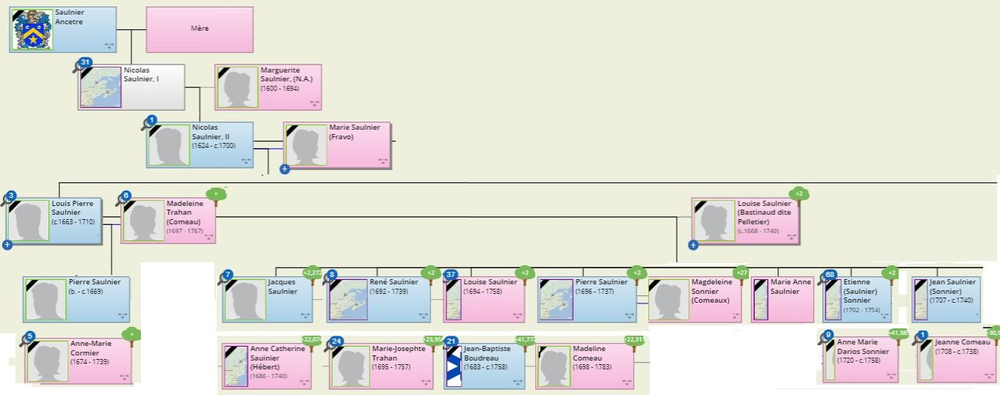

Généalogie
de la famille
Saulnier
Charles Saulnier
2020-2021
Tous droits réservés
Généalogie de la famille Charles Saulnier - janvier 2021.
Préambule
Pendant que le premier ministre du Québec donne le slogan « Restez-chez-vous » durant la pandémie 2020-2021, quoi de plus distrayant que de s'occuper de généalogie. Cet intérêt pour la généalogie ne date pas d'hier. En 1993, j’avais monté un arbre généalogique de la famille maternelle de Moor puis de la famille paternelle Saulnier avec le logiciel Works pour les personnes connues dans ma famille.
En 1995, j'ai emprunté de ma tante, Luce Saulnier, un livre, qu’elle avait alors en main, fait par l’Institut Drouin remontant l'arbre généalogique de la famille de Joseph Saulnier (tous les ancêtres de Joseph et de Marie Parent). Ce livre avait été commandité par mon oncle Adrien. Étant à mes débuts en informatique, j'ai retranscrit toutes les informations du livre, page par page, dans un fichier base de données (logiciel Works) et en ai imprimé une copie. Lorsque le logiciel Works est devenu obsolète, j'ai transféré les données dans un fichier Excel en 1997 pour conserver les données.
J'ai cherché longtemps comment rebâtir le livre généalogique et la manière de présenter les données : roue de paon, arbre généalogique, organigramme. Le résultat est éléphantesque donc impossible d'en avoir une vue d'ensemble. Finalement, la meilleure solution demeure le publipostage dans Word des données inscrites dans le fichier Excel. Lorsqu'il y a interconnexion des deux fichiers, on peut voir sur une page dans Word toutes les données concernant un même couple sur une ligne du chiffrier Excel. Pour Excel, l'intérêt additionnel du logiciel est de pouvoir trier des informations par colonne et faire rapidement des recherches par mots-clés.
La faiblesse du livre de L’institut Drouin est qu'il est peu bavard sur les évènements ayant touché un couple et ne retient comme informations principales que la date et le lieu de mariage. Pas d'information concernant la naissance, la sépulture ni la descendance complète des aïeux. Pourtant, faire un survol des lieux de mariage indique qu’ils se sont déplacés passablement.
J'ai donc décidé, pour la famille Saulnier de ramasser le maximum d'informations, de bonifier au passage mon fichier Excel de données principalement recueillies du Catalogue des immigrants de Marcel Trudel et d'essayer d'établir, avec cet ouvrage-ci, ce que serait l'histoire familiale.
Introduction
Je ne suis pas historien ni écrivain mais fiscaliste comptable de profession. En ce sens, écrire un roman ou un récit épique n'est pas un objectif ni une fin en soi que je recherche. Par contre, l'exactitude des faits et des chiffres m'apparait essentiel si l'on veut connaitre nos ancêtres. Il y a devoir d'enquête puisque personne ne peut témoigner du vécu ni des opinions de ces gens. Il n'y a uniquement que les actes écrits et les faits historiques qui permettent de cerner réellement leurs vies. En faisant ce document, je m'attache à vérifier et commenter les données recueillies et je me permets de conclure au degré de véracité des sources consultées. Mes hypothèses seront identifiées et différenciées des faits. Comme pour tout écrit qui se veut sérieux, je citerai en référence les sources consultées.
En fouillant sur Internet j'ai décelé cette belle phrase :
En quittant la France pour l’Acadie et le Canada, nos ancêtres ont quitté l’anonymat pour de bon.
En effet, l'Histoire s'attarde peu aux petites gens. Il y a abondance de documentatiosn informant qui concernent nos ancêtres. On peut savoir qui étaient sur les navires partant pour la Nouvelle-France (Québec et Acadie), consulter les recensements effectués en Nouvelle-France[1], les registres paroissiaux des églises (baptêmes, mariages et sépultures), les actes notariés d’engagements, les procès, la relation de faits historiques. Malheureusement, aucune de ces sources n'est totalement complète, ni tout-à-fait précise ou entièrement accessible et les membres de la famille Saulnier se sont faits plutôt discrets. De plus, certains sites généalogiques indiquent des informations sans référer aux sources et apparaissent inexactes. Ce qui complique la tâche de démêler le vrai du faux.
Début des recherches.
Débuter des recherches ou une enquête nécessite d'abord se poser des questions en vue de savoir ce que l'on cherche vraiment. Quelles sont donc les questions que je cherche à résoudre au fur et à mesure? D’abord, celle de monter une histoire de la famille Saulnier en ce qui concerne la branche de Joseph Saulnier puisqu'il est l’aboutissement du livre de généalogie de L’Institut Drouin. Deuxièmement, en savoir un peu plus sur la parenté Saulnier de manière à savoir quel Saulnier, aujourd'hui, est plus ou moins proche parent de nous. Une première lecture des données généalogiques m'a amené aux interrogations suivantes :
- Peut-on découvrir les ancêtres français ? Si oui, qu’en savons-nous?
- Pourquoi existe-t-il des Saulnier, Saunier et Sonier?
- Pourquoi retrace-t-on des surnoms pour certains ancêtres?
- Qu'est-ce qu'on sait d'autres sur eux?
- Y a-t-il des informations complémentaires comme à savoir le motif des déplacements d'une région à une autre?
- Y a-t-il des traces de métissages dans la famille?
- Et surtout : ces informations sont-elles exactes?
Première étape : L'institut Drouin
Évidemment, l’Institut Drouin est une excellente référence en ce qui concerne la généalogie au Québec. Peut-on faire mieux? Jusqu’où nos racines nous mènent-elles?
L'institut Drouin donne le nom et surnom des époux, la date et le lieu de mariage, parfois le métier de l'époux et de rares informations sur l'histoire de l'ancêtre. Il s'agit donc, somme toute, d'informations tirées des actes de mariage et des faits notoires pour certains ancêtres connus.
Pour ce qui est de la famille de Joseph Saulnier, les informations indiquent que Joseph était la 7e génération de Saulnier établie en Amérique. En ce qui me concerne, comme Joseph est mon grand-père, je suis donc de la 9e génération portant le patronyme Saulnier. Par contre, lorsque l’on regarde tous les liens en considérant les parentés de nos grands-pères et grands-mères, le nombre de génération au Canada que nous avons dépend de la lignée par rapport à chacun de nos ancêtres. En effet, dépendamment si nous sommes issus de l’ainé de la famille ou du benjamin et de l'âge du marié, il se peut que d'autres Saulnier du même âge que nous présentement aient une lignée ascendante plus longue bien que provenant du même ancêtre.
L’arbre généalogique monté par l’Institut Drouin n'indique pas les baptêmes, sépultures ni qui sont les frères et sœurs de l'ancêtre. Tout reste à deviner.
Débuter la recherche généalogique commence d’abord par partir du premier ancêtre arrivé en Amérique puis de déterminer jusqu’où on peut remonter sa parenté en Europe puis de suivre cet ancêtre jusqu’à nous.
À tout seigneur, tout honneur, commençons par le commencement : Louis Saulnier. Le premier ancêtre Saulnier en Amérique est Louis Saulnier; il s'est établi en Acadie. Cette information est corroborée par diverses sources facilement accessibles. Les notes de l'institut Drouin concernant Louis Saulnier et ses descendants sont les suivantes :
Louis Saulnier | Il a épousé Louise Bertinaux tous deux originaire de Vitré, en Bretagne. Il s'est établi, en 1690, en Acadie dans le bassin des Mines. En 1714, ils étaient établis à la Rivière de la Vieille Habitation à la Pointe Beauséjour. Par la suite, une bonne partie de la famille s'établit au Nouveau-Brunswick, soit à Peticondiak et à Chipoudy. Craignant l'arrivée des Anglais, ils s'en vinrent à Québec à travers la forêt. |
Jusqu'ici tout va bien! Mais c'est aussi à partir de cela que les problèmes commencent. Mettre de la chair autour de l’os n'est pas une sinécure. Par exemple, aucune information ne nous indique les parents du couple.
Deuxième étape : Peut-on découvrir les ancêtres français ? Si oui, qu’en savons-nous?
Pour ce faire, afin de vérifier et étoffer mes données de base concernant l'ancêtre Louis, j'ai consulté bon nombre d'ouvrages historiques et de dictionnaires généalogiques ainsi que des sites internets concernant la généalogie, les archives et l’histoire. En faire le tour n'est pas une mince tâche.
Les sites internets de généalogie.
Commençons par l'étude d'un premier site. Par exemple, je vous présente le site Sentier Acadie historique[2] qui mentionne, pour les patronymes Saulnier, Sonier, Sonnier, que:
Le marin Louis Saulnier, né à Vitré dans la région de Bretagne vers 1663, arrive en Acadie vers 1684, l'année de son mariage avec Louise Bastineau[3] dit Peltier à Grand-Pré. Le couple a 14 enfants qui s'établissent à leur tour dans la région RIvière-de-la-Vieille-Habitation et au Village-des-LeBlanc, à Cap-Sable, à Chignecto, Petitcoudiac et sur l'île Saint-Jean. Au moins 16 des descendants de Louis Saulnier émigrent en Louisiane à partir de Halifax en 1765 et en France en 1785 mais un bon nombre demeurent au Canada, dans les Antilles française et en France après la Déportation. Louis Saunier décède vers 1730, dans la soixantaine.
Bien que certains membres de la famille réussissent à échapper à la Déportation, ce ne sont pas tous les Saulnier qui ont cette chance. Pierre le jeune, de Rivière-aux-Canards, sa femme Marguerite Vincent et leurs enfants sont déportés en Virginie. Le gouverneur refusant d'accueillir des déportés, le navire reprend sa route pour l'Angleterre. La famille est emprisonnée pendant sept ans et certains meurent d'une épidémie de petite vérole.
Les survivants sont rapatriés en France par la suite. Une des tantes de Pierre, Marguerite Saulnier, son mari Jacques Oudy et leur famille entière périssent noyés à bord du Violet pendant la traversée vers l'Angleterre.
Les Saulnier sont parmi les premiers Acadiens à trouver refuge en Louisiane après avoir été déportés de Halifax à Cap-Français sur l'île Saint-Domingue. Ils s'établissent dans la région de l'Opelousas.
Un premier problème est que le site ne fait référence à aucune source qui valide la véracité de ces dires. Il faut donc faire l'analyse mot par mot du contenu de ces informations obtenues auprès de différentes source et ainsi faire les vérifications qui permettront de déterminer la véracité du contenu. Voici une première analyse de ce texte. Quant aux vérifications, elles seront plus amplement détaillées et motivées par la suite :
L'affirmation du texte | La contre vérification effectuée |
Le marin | C'est au recensement effectué en 1693[4] qu'il est noté que Louis est marin. Cependant, cela ne veut pas dire qu'il en a fait une carrière exclusive durant toute sa vie. |
Louis Saulnier | Le prénom est écrit de manière invariable et est toujours celui de Louis. Par contre, Louis ne sait signer. C'est donc à celui qui tient la plume de déterminer l'orthographe du nom de famille. Au XVIIe siècle, plusieurs vont écrire au son entendu les noms de famille et le transcrire selon son propre niveau de connaissance du français. Les formes orthographiques d'un nom de famille sont donc variées même pour une seule personne. Finalement, plusieurs sites ne retiennent que l’orthographie répandue et acceptée. Dans ce cas-ci, Saulnier est la forme retenue. |
né à Vitré …Bretagne | Beaucoup de sites le mentionnent. Cependant, cela ne repose sur aucun document écrit. Par conséquent, c'est une probabilité plus qu'une véracité. |
vers 1663 | C'est au recensement effectué en 1693 qu'il est noté que Louis est âgé de 30 ans. 1663 résulte donc d'un simple calcul arithmétique : s’il est âgé de 30 ans, il est né en 1662 ou 1663 dépendamment de sa date exacte de naissance. Il est à noter que la personne (Louis) puisse avoir déclaré un âge différent du sien. Aucun indice non plus que la donnée fournie par Louis au recenseur ait été vérifiée à l'époque. |
arrive en Acadie | Le recensement effectué en 1693 a lieu en Acadie. C'est une présomption qu'il soit arrivé directement en Acadie. Aucun document ne prouve hors de tout doute que ce fut le cas pour Louis. En fait, on ne sait pas quand il est arrivé en Acadie. |
vers 1684 | Le recensement effectué en 1693 indique que son fils ainé a 8 ans. 1684 résulte donc d'un simple calcul arithmétique : 1693 – 8 ans – un minimum de 9 mois de grossesse pour un enfant légitime donne 1684 comme résultat. |
l'année de son mariage | Le recensement effectué en 1693 indique que Louis est marié. Ici, on présume par le même calcul précédent que le mariage s'est fait en 1684 (soit au plus tard tout juste avant la naissance de son fils ainé). Aucun document existant n'indique le lieu ou la date du mariage. |
avec Louise Bastineau | Le prénom est écrit de manière invariable et est toujours celui de Louise. Le nom de famille de Louise varie terriblement. On la connait sous le nom de Bertineaux, Bartineau, Bastineau, Bastinaud et même Babin ou Babineau (quoique ces derniers moins probables). |
dit Peltier | L'usage de surnom est fréquent à l'époque et vise souvent à différencier deux personnes portant le même nom. On la retrouve comme étant une : dit Peltier, dit Pelletier ou directement Louise Pelletier (dans ce dernier cas, c'est possiblement une erreur). |
à Grand-Pré | Le couple Saulnier demeurait en 1693 à Grand-Pré. L'église Saint-Charles ne sera construite qu'en 1687 alors que le village a été fondé entre 1680 et 1682. Cette affirmation est une présomption. Ils auraient pu très bien se marier en France ou ailleurs. |
Le couple a 14 enfants | On connait l'existence en Acadie de 14 Saulnier nés entre 1682 et 1708. On peut, par différents documents retracés que ceux-ci sont les enfants de Louis et de Louise. Par contre, il est difficile d'être absolument certain du nombre d'enfants. Certains ont pu mourir en très bas âge. Pour d’autres, il devient ardu de savoir leur date de naissance et de les placer comme enfants. Seulement une partie des registres paroissiaux de l'Acadie nous sont parvenus. |
qui s'établissent à leur tour dans la région RIvière-de-la-Vieille-Habitation | RIvière-de-la-Vieille-Habitation est un lieu-dit du Bassin des Mines dont fait partie Grand-Pré. Le recensement effectué en 1693 indique que Louis y est installé de même que les recensements suivants. |
et au Village-des-LeBlanc | lieu-dit du Bassin des Mines. |
à Cap-Sable | Situé complètement au sud de la Nouvelle-Écosse. Aucun document retracé ne lie les Saulnier de l'époque de Louis à ce lieu. |
à Chignecto | C'est l'isthme qui est à cheval entre le Nouveau-Brunswick et la Nouvelle-Écosse. On n'y voit la famille de certains de ses enfants qu'à partir des années 1740 environ. L’arrivée survient par la recherche de nouvelles terres à cultiver et l'idée de se rapprocher des territoires sous contrôle français. |
Petitcoudiac | Situé près de Moncton, Nouveau-Brunswick. Le village n'est surtout peuplé qu'aux alentours de 1752 lorsque les acadiens cherchent à fuir les britanniques. |
et sur l'île Saint-Jean | Pour fuir la Déportation, certains Acadiens se retrouveront à l'Île-du-Prince-Édouard alors nommé l'île Saint-Jean. L'arrivée de descendants ne se fait pas avant 1740. |
[…] Saulnier émigrent en Louisiane | Ce n'est pas le cas de notre branche familiale. Il n'y a pas eu de déportation directe vers la Louisiane. |
à partir de Halifax en 1765 | Il y a eu des Déportés de la Nouvelle-Angleterre qui se sont vus offrir l'occasion de partir en bateaux vers Haiti puis ont rejoint la Louisiane. Ce n'est pas le cas de notre branche familiale. |
et en France en 1785 | On offrait des terres pauvres aux Acadiens rapatriés en France et on s'occupait très peu de leur sort par la suite. Beaucoup ont préféré retenter leur chance ailleurs en Amérique (Louisiane, Antilles et Guyane) que de rester en France. Ce n'est pas le cas de notre branche familiale. |
mais un bon nombre demeurent au Canada | En fuyant la déportation. C'est le cas de notre branche familiale. D'autres sont revenus en Acadie depuis la Nouvelle-Angleterre après 1760. |
Louis Saunier décède vers 1730 | On n’en sait rien. Seul le serment d'allégeance faisant état de celui de Louis Saulnier confirme qu'il était encore en vie en 1730. Il n'en est pas mort pour autant! |
dans la soixantaine | Il s'agit d'un calcul arithmétique 1730 – 1663 = 67 ans ou plus s'il est décédé après 1730. |
[…] certains meurent d'une épidémie de petite vérole | C'est le cas de notre branche familiale. Les britanniques pourchassaient les acadiens. En plus il y a famine durant l'hiver 1757 ce qui a affaibli la santé des acadiens fugitifs sans ressources; ils sont devenus fragile face à des maladies de l'époque. |
Cette analyse démontre donc toute la complexité entourant la généalogie et l'histoire des Saulnier ainsi qu'à démêler le vrai du faux ou du probable.
Chapitre 1 – Les ancêtres de Louis et de Louise. Comment et quand Louis et Louise quittent-ils la France
Les sites internets des archives et d'histoire.
Ne sachant que peu de choses sur Louis Saulnier et son épouse, il faut étendre la recherche pour en savoir un peu plus. Les questions qui surgissent du manque d'information sont les suivantes :
- Y a-t-il des sites qui ont retracés les parents de Louis Saulnier et de Louise Bastineau?
- Y a-t-il eu d'autres Saulnier qui sont venus en Amérique ou en est-il le seul?
- S’il y a eu d'autres Saulnier,
- y en a-t-il qui sont arrivés en même temps que Louis?
- y en a-t-il qui sont arrivés une génération avant Louis? En d'autres termes, se pourrait-il que Louis soit né en Amérique et non en France?
- S'il est né en Amérique, pourrait-il être un métis?
- S’il y a eu d'autres Saulnier venus de France, de quelles régions de France venaient-ils?
- Où retrouve-t-on le patronyme Saulnier et celui de « Bastineau » en France?
- Sur quel navire Louis a-t-il traversé l’Atlantique? En quelle année?
- Était-il accompagné de membres de sa famille (père, frères, son épouse, ses enfants nés en France, ses beaux-parents)?
- Quel fut le port d'embarquement en France et quel fut sa destination en Amérique? En d'autres termes, se pourrait-il que Louis soit arrivé à Québec puis qu'il ait pris le chemin de l'Acadie par la suite? Si c'est le cas, aurait-il pu marier Louise à Québec avant de s'établir en Acadie?
Bons nombres de questions à résoudre. Plus il est possible de régler par la négative ou l'affirme une question, plus on précise la manière dont Louis Saulnier s’y est pris pour aboutir en Acadie. Quant aux questions dont la seule réponse sera « peut-être que oui » ou « possiblement non », cela permettra aussi d'évaluer le scénario le plus probable entourant les circonstances de son arrivée. Ce même genre d'analyse, c’est-à-dire à celui de donner une réponse valable à des questions d'éclaircissement, s'appliquera tout au long de cet ouvrage.
Première question : Y a-t-il des sites qui ont retracés les parents de Louis Saulnier et de Louise Bastineau?
Bonne nouvelle : la réponse est oui! Mauvaise nouvelle : la crédibilité est en remettre en doute.
Le site qui remonte la généalogie famille au plus loin est le suivant : Geni.com[5] on y indique que Louis « Pierre » Saulnier / Sonnier est le fils de Nicolas II Saulnier (né en 1624) et de Marie et que Nicolas II est lui-même fils de Nicolas I Saulnier. Ce dernier aurait été marié à Marguerite et celui-ci serait né vers l'an 1600 à Vitré en Bretagne.
Reconstitué en partie, l’arbre généalogique de ce site donne le résultat suivant[6]

Louis Pierre Saulnier serait né en 1663, serait décédé en 1710 et aurait été marié deux fois : avec Madeleine Trahan puis Louise Bastineau dit Pelletier dont il eut plusieurs enfants : Jacques, René, Louise, Pierre, Marguerite, Marie-Anne, Étienne, Jean, etc. Le site ne fournit aucune source d'information, du moins, sur la partie gratuite du site ni sur la qualité de ceux qui ont mis en ligne l'information.
Analyse et commentaires. D'abord, on n'a pas retrouvé à date l'acte de baptême de Louis Saulnier. Difficile de dire qui ont été ses parents. Il n'y a aucune preuve qui corrobore que Louis s'appelait Louis-Pierre non plus. En fait, comme je vous le décrirai plus tard, il existait un Pierre Saulnier décédé en 1710. Visiblement, il y a eu confusion et fusion de deux personnes. Peu de sites reprennent cette information. En conclusion, le site n'a pas validé ses sources. Il ne peut être considéré comme une source totalement fiable.
Un autre site internet, geneatique.net (voir ci-contre), nous donne les deux mêmes niveaux d'ancêtres pour Louis. Cette fois, on y indique plus prudemment que le décès de Lo0uis a eu lieu +1709 (donc après 1709 c’est-à-dire l'année de l'acte de baptême de son fils Jean). Il se serait bien marié avec Louise Bastineau dit Peltier et aurait bien eu René comme l'un de ses fils. Est-ce vrai? Ce site confirme-t-il le précédent? Je n'ai pas communiqué avec l'auteur de l'une ou l'autre page internet. À vrai dire, cela sonne faux. Selon le site wikitree[7], le généalogiste Stephen White de l’université de Moncton, spécialiste de la descendance acadienne, affirme que : quoique des arbres généalogiques indiquent que Louis Saulnier provient de Vitré, aucun document ne vient prouver cette affirmation. Voir également: White, Stephen A., Patrice Gallant, and Hector-J Hébert. Dictionnaire Généalogique Des Familles Acadiennes. Moncton, N.-B.: Centre D'études Acadiennes, Université De Moncton, 1999, p1446-1448. Une partie de ce dictionnaire est disponible en ligne[8] concernant une correction concernant Jacques Saulnier, l'un des fils de Louis. Qu'en est-il donc? Sans preuve, sans vérité absolue. |
|
Deuxième question : Y a-t-il eu d'autres Saulnier qui sont venus en Amérique ou en est-il le seul?
Pourquoi se poser la question? Tout simplement pour avoir un aperçu des lieux où les Saulnier vivaient en France à cette époque. Mais surtout parce que les français qui ont migrés ne partaient pas nécessairement seuls mais pouvaient être accompagnés de membres de leur famille.
Comme les données historiques sont partielles ou parfois manquantes, il est impossible de faire la liste précise et complète des Saulnier ayant traversé l’Atlantique au XVIIe siècle. Toutefois, j'ai retracé d'autres Saulnier qui sont venus en Amérique au cours du XVIIe siècle. C’est ce que nous verrons au chapitre 3. Ceux que j'ai retrouvés sont : Françoise Saulnier ou Sonier, Nicole Saulnier, Pierre Saulnier de Criel, Étienne Saulnier, Philippe Saulnier, Jehan Saulnier, Pierre Saulnier, Madeleine Saulnier, et (peut-être) Marie Soyer ainsi que le capitaine Pierre Saulvic appelé aussi Pierre Sonnicq.
Troisième question : S’il y a eu d'autres Saulnier, y en a-t-il qui sont arrivés une génération avant Louis ou qui sont ses contemporains? Quatrième question : Louis Saulnier pourrait-il être un métis?
Louis Saulnier est loin d’être le seul Saulnier à être venu en Amérique. Par contre, il est le seul venu de France avant 1760 et qui a eu une descendance.
Louis est né en France. Il n'y a pas eu de Saulnier venus avant lui qui ont fondé une famille et, par déduction, Louis est né en France et non en Amérique. Il n'est donc pas métis.
Le Dictionnaire généalogique des familles canadiennes depuis la fondation de la colonie jusqu'à nos jours `(volume I : 1608-1700) par l'Abbé Cyprien Tanguay – 1871[9] retrace la généalogie des familles mais il se concentre sur celles du Québec. L’intérêt de sa lecture est de vérifier si des Louis Saulnier, Saunier, Sonier, ou Louise Bastineaux, Bastinaud, Bertineaux ont laissé des traces au Québec. En page 24, on y mentionne que le patronyme Saulnier signifie qui fait ou vend du sel. Le commerce du sel est très important à l'époque[10].
Le sel vient du mot latin sal. Les déclinaisons de mots dérivés de sal sont : saler (la gabelle était un impôt sur le sel d'où l’expression facture salée), salin, salage (conservation du poisson et de la viande grâce au sel (saumure)), saunier (dont l’ancienne orthographie était saulnier), salaire (de salarium = solde pour acheter le sel) [11].
Il y a eu d'autres Saulnier qui sont arrivés à peu près à la même époque que Louis Saulnier mais rien n'indique qu'il puisse y avoir un lien de parenté de ceux-ci avec Louis Saulnier. Il est donc impossible d'établir un lieu commun en France où seraient partis les Saulnier. Comme Saulnier réfère à un métier courant en France, il est possible de l'associer à une région spécifique de la France.
Cinquième question : de quelles régions de France venaient les Saulnier?
Sixième question : Où retrouve-t-on le patronyme Saulnier et celui de « Bastineau » en France?
Comme je l'expliquerai plus tard, à partir de personnes retracées portant le patronyme Saulnier entre 1660 et 1710, il me semble que le nom de famille Saulnier est déjà éparpillé un peu partout en France à cette époque et qu'il est impossible de tirer une conclusion à partir de l'étymologie du patronyme.
Quant au patronyme Bastineau ou à ses dérivés orthographiques, je n'ai rien retracé.
Septième question : Sur quel navire Louis Saulnier a-t-il traversé l’Atlantique? En quelle année?
Malgré la quantité d'informations disponibles au sujet des passagers de l'époque, aucun document ne prouve quel navire ni à quelle date Louis Saulnier et son épouse ont fait la « grande Traversée ». Les principales raisons pour cela sont :
- Il n'y a pas eu que des volontaires pour s'établir en Nouvelle-France. On engageait le plus souvent une personne pour un contrat de trois ans au bout duquel on offrait à la personne de s'établir en Nouvelle-France. Beaucoup d'engagés (environ 70%) sont retournés en France après leurs « 36 mois ». la quantité d'information à dépoussiérer est beaucoup plus volumineuse que l'on pourrait croire et il n'est pas certain que tous les registres aient été répertoriés, analysés et surtout conservés.
- Entre 1680 et 1693, période la plus probable de l'arrivée de Louis Saulnier, beaucoup de français sont arrivés comme soldat et non comme engagé. Donc celui qui arrive comme soldat n'avait pas eu de contrat notarié d'engagement au départ de la France. Ce n'est qu'à son arrivée en Nouvelle-France qu'on proposera au soldat de s'y établir.
- Les membres de l'équipage d'un bateau peuvent ne pas avoir été inscrits. Si Louis Saulnier est l'un d'eux, il se peut que son nom ne figure pas sur la liste des passagers du navire.
Pour ces raisons, entre autres, il est à peu près impossible de savoir exactement et sur quel navire et quand Louis Saulnier et son épouse sont arrivés en Nouvelle-France tant et aussi longtemps que l'on n'aura retracé un document d'époque pouvant les identifier.
Huitième question : Était-il accompagné de membres de sa famille (père, frères, son épouse, ses enfants nés en France, ses beaux-parents)?
Bien que plusieurs engagés partirent avec des membres de leurs familles ou des concitoyens, il semble que Louis Saulnier et son épouse ne furent accompagnés d'aucune autre personne reliée à leur famille ni à leur région natale.
Lorsqu’une famille arrivait en Nouvelle-France, on listait le nom et l’âge des enfants. La première trace de Louis Saulnier est celle du recensement de sa famille et 1693 où il est noté qu'il avait déjà des enfants. Quoique les sites de généalogie indiquent tous qu’ils se sont mariés en Acadie et que leurs enfants sont tous nés en Acadie, aucun document ne vient supporter cette présomption générale.
Louis et Louise sont peut être arrivés séparément, arrivés mariés ou encore arrivés avec leurs enfants.
Neuvième question : Quel fut le port d'embarquement en France et quel fut sa destination en Amérique? En d'autres termes, se pourrait-il que Louis soit arrivé à Québec puis qu'il ait pris le chemin de l'Acadie par la suite? Si c'est le cas, aurait-il pu marier Louise à Québec avant de s'établir en Acadie?
Puisque Louis Saulnier est arrivé en Acadie quelque part entre 1686 et 1693[12], le port d'embarquement en France le plus probable est celui de La Rochelle car le plus actif à l’époque et celui qui desservait l’Acadie. Par contre, cela n'exclue pas que des navires provenant de plus petits ports ont pu transportés des gens désireux de venir en Nouvelle-France.
Les négociants du commerce avec le Canada de 1660-1760[13]
D'après nous, les navires utilisés dans le commerce avec le Canada le moins susceptible d'être identifiés sont ceux qui venaient de ports secondaires tels que Calais, Saint-Valery-sur-Somme, Dieppe, Cherbourg, Carteret, Honfleur, Granville, Les Sables-d'Olonne ou Saint-Jean-de-Luz. Dans certains cas, les registres de l'amirauté ont été perdus. Ainsi, on peut se demander combien de bateaux de la flotte de pêche ont fait escale à Québec ou ailleurs sur les rives du Saint-Laurent. Nous savons, par exemple, que la Marie Jeanne, une goélette des Sables-d'Olonne, a jeté l'ancre à Québec en 1753 parce que le capitaine André Collinet nous l'a indiqué dans son journal, aujourd'hui conservé aux Archives départementales de la Vendée (à Mont-de-Marsan). Mais il doit y en avoir eu beaucoup d'autres, aujourd'hui inconnus parce que les registres de l'amirauté de Québec ont été perdus. Sur la masse des documents qui ont survécu, il nous arrive d'apercevoir un navire, au loin, pourrait-on dire, dans une mer d'incertitude, à peine mentionné dans une lettre ou dans les inventaires après décès.
Ne sachant ni son lieu d'origine, ni le navire le transportant ni la date exacte de sa venue, on ne sait pas non plus en quel port il fut arrivé en Amérique.
Il se pourrait-il que Louis Saulnier soit arrivé à Québec parce qu'à cette époque (1686-1693) peu d'immigration se fait directement de la France vers l’Acadie. Cela n'exclue pas que les seigneuries situées en Acadie n'ont pas cherché à recruter par eux-mêmes des engagés. Par contre, on sait que des canadiens (de la vallée du St-Laurent) se sont établis en Acadie à cette époque surtout dans la région de l'isthme qui sépare aujourd'hui le Nouveau-Brunswick et la Nouvelle-Écosse. C’est le cas, entre autre, de la famille Pelletier déjà établie à Québec.
Puisque les registres de baptêmes, mariages et sépultures ont été assez bien conservés en Nouvelle-France, il est peu probable que Louis se soit marié avec Louise en Nouvelle-France sans laisser de traces. Je présume donc comme raisonnable de penser que leur mariage a eu lieu avant de partir de la France. Quoique beaucoup de sites généalogiques indiquent qu'ils se soient mariés en Acadie vers 1683, rien ne le prouve. Tout au contraire, il s'agit d'une grossière présomption à mon avis.
Maintenant que ces questions générales sont répondues, examinons-en les détails pour cerner les circonstances de l’arrivée de Louis Saulnier et de son épouse.
Chapitre 2 – Les circonstances de l’arrivée de Louis Saulnier et de son épouse en Nouvelle-France.
Puisque nous ne savons à peu près rien de leur couple avant 1693, il est important de connaitre comment fonctionnait la France et la Nouvelle-France ainsi que les us et coutumes de l'époque. En d'autres termes, s'il est impossible de savoir quoi que ce soit sur la jeunesse en France de nos ancêtres, au moins attardons-nous à connaitre quel pu bien être son « modus operandi » et son « mens rea », c’est-à-dire connaitre la manière qu'il s'est pris pour venir en Nouvelle-France et son intention ou motivation pour le faire.
Je me permettrai de situer les points suivants :
- Le contexte de l'âge légal à la fin du XVIIe siècle
- Le contexte du mariage à la fin du XVIIe siècle
- Le contrat d'engagement pour la Nouvelle-France
- Les circonstances historiques favorisant le départ de la France pour la Nouvelle-France.
- La situation en Nouvelle-France et en Acadie plus particulièrement.
1. Le contexte de l'âge légal
- Droits de contracter en France : l'âge de la majorité civile au XVIIe siècle.
| Le chapitre précédent a conclu que Louis est né, vraisemblablement au plus tôt, vers 1662-1663. Louis peut-il avoir menti sur son âge au recenseur en 1693? La réponse est… oui! |
On avait alors deux raisons pour mentir sur son âge, chaque fois en se déclarant plus vieux que son vrai âge. La première est que l’on voulait être déclaré majeur (sans tutelle) et émancipé avant l'heure; la seconde, on aimait dire que l’on avait un âge vénérable lorsque la vieillesse arrivait. Il faut dire que le simple citoyen français faisait partie du « tiers état » (que l’on pourrait assimiler aujourd’hui à la «plèbe») composant plus de 80% de la population entière et qu’il était sujet à différentes corvées dont celle de devoir faire partie de la milice (et guerroyer) et d'entretenir par ses taxes et impôts la noblesse et le clergé (les deux autres états).
Même s'il était plus jeune que son âge déclaré, Louis avait tout de même un fils de 8 ans en 1693. Il est peu probable qu'il soit devenu père avant l'âge de 16 ans. Il n'est donc pas né après 1668.
Sans autre forme, considérant également qu'il doit d'abord se marier, il me semble raisonnable de penser qu’au plus jeune, il n'est pas devenu père avant l'âge de 20 ou 21 ans. En conclusion, j'estime que Louis avait au plus l'âge de 30 ans en 1693 et que, s'il a donné un âge inexact au recenseur de 1693[14], il serait né au plus tard en 1665 (1693 – l'âge de 28 ans). Louis semble avoir déclaré son âge exact. Il est donc né vers 1662-1663 ou légèrement après.
Ce faisant, pour savoir quand il lui est possible de se marier s'engager auprès d'un colonisateur et traverser outremer, le premier repère consiste d'abord à savoir quel est l'âge pour être considéré adulte (avoir la majorité civile) et l’âge permis pour contracter à cette époque.
La majorité civile en France[15]
Sous l'Ancien Régime[16], la majorité suit le droit canon (au Moyen-Âge): 14 ans pour les garçons, 12 ans pour les filles. […] un système d’origine médiévale de paliers de droits à 12 ans pour les filles et 14 ans pour les garçons (Recueils de la société Jean Bodin, 1976). La différence entre filles et garçons, très ancienne […].
[…] Période peu faste pour les droits des femmes mais aussi, c’est moins connu, pour ceux des jeunes gens. Ainsi, en 1579, sous Henri III, l’Ordonnance de Blois (Fize, 2016) la majorité civile passe à 30 ans pour les garçons et 25 ans pour les filles. (il demeure des variantes avec les coutumes locales). En droit canon (religion)[ la majorité] reste à 14 ans pour les garçons, 12 ans pour les filles. Les femmes peuvent désigner un mandataire pour les représenter dans certaines conditions.
[au XXe s.] La disposition permettant à un mineur français d’être émancipé automatiquement en cas de mariage (article 413-1 du code civil) était, croyait-on, devenue sans objet puisqu’il n’y a plus de mariage possible avant 18 ans en France[17].
En d'autres termes, vers 1686-1693, un garçon n'était émancipé avant 30 ans que s'il était marié.
- Cadre de vie en France
Continuons la lecture du site :
Avec la famille, la paroisse est le cadre de base de la vie religieuse mais aussi civile. La très grande majorité des Français sont guidés de la naissance (avec le baptême) à la mort (avec l'extrême-onction) par les préceptes de l'Église catholique romaine. Le prêtre catholique est un des rouages de la vie de la communauté villageoise ou de quartier. Il distribue les sacrements, mais il est aussi le conseiller dans les affaires privées et le directeur de conscience.
|
Les paysans, qui constituent la très grande majorité de la population, ont rarement affaire à l’autorité royale. Le curé annonce les nouvelles officielles et tient l’état civil. Le seigneur rend la justice. L’assemblée des principaux propriétaires répartit l’impôt et recrute le maître d’école[18]. |
Concernant le recouvrement de la taille, l'assemblée du village désigne tous les ans des personnes qui ont la charge de collecter le montant de l'impôt dû par la communauté.
Les laboureurs possèdent des terres, l'équipement pour les exploiter et un cheptel. Les manouvriers sans biens louent leurs bras ou pratiquent une activité artisanale.
La population est essentiellement rurale. La vie des paysans tient à l'abondance des récoltes, d'autant plus qu'ils sont soumis à de nombreuses obligations, en particulier :
- le versement au seigneur du cens, au titre de l'exploitation des terres des banalités, au titre de l'utilisation des moulin, four et pressoir du champart
- au clergé de la dîme
- au roi de la taille sur les revenus ou les biens fonciers de la gabelle sur le sel les corvées au service tant du seigneur que du roi le service dans la Milice créée par Louis XIV
Analyse.
Louis n’aurait obtenu son émancipation qu'à sa majorité civile à l’âge de trente ans sauf dans le cas où il s’est marié avant cet âge avec l’accord de ses parents ou de son tuteur. Quant au mariage, le droit canon de l’Église exigeait un âge minimal de 14 ans pour les garçons et de 12 ans pour les filles. Donc Louis ne s'est pas marié avant 1676 (1662 + 14 ans). Par contre, comme son fils ainé est né en 1684, il a obtenu d'une façon quelconque son droit à la majorité avant l'heure.
Le recrutement pour la Nouvelle-France est basé sur les besoins du colonisateur pour une main d'œuvre spécialisée. Il semble que les recruteurs ne furent pas trop regardant sur l’âge de majorité de la personne engagée. Si Louis a obtenu sa majorité du fait qu’il soit marié, cela n’a pas dû causer problème. En fait, le mariage avant le départ pour la Nouvelle-France pourrait être expliqué par le fait que Louis voulait avoir tous les droits en regard de sa majorité.
C'est pourquoi j'estime probable que son mariage a eu lieu en France plutôt qu'en Acadie.
- Le mariage à la fin du XVIIe siècle.
Le mariage. [19] Le mariage de cette époque n'est pas l'aboutissement d’un roman d'amour (on ne voit cela qu'en littérature), il est d'ordinaire arrangé par les parents[20] tant que le garçon n'a pas atteint ses 30 ans; et quand la future est le choix du garçon, le droit de véto parental peut survenir[21].
Par ailleurs, l'évêque Saint-Vallier[22] assigne au mariage un premier but élevé, atteindre en couple la sainteté; le second étant de mettre au monde des enfants, mais il affirme que l' « usage » du mariage, c’est-à-dire l'acte sexuel, n'est pas de l'essence du contrat.
En tout cela, l'évêque ne parle d'amour que pour dire que le mari doit aimer sa femme; il ne dit pas que celle-ci doit aimer son mari : elle doit le craindre et le « respecter » [23].
Quels sont les devoirs des maris? C’est d'aimer leurs femmes comme leur propre corps.
Quelles sont les obligations des femmes mariées? C'est d'être soumises en tout à leurs maris, comme au Seigneur.
Pourquoi? Parce que le mari étant le chef de la femme comme Jésus-Christ est le chef de l'Église, elle doit le craindre et le respecter.
On ne sait pas si Louis a obtenu le consentement de ses parents pour se marier ni si son mariage a été arrangé. Concernant Louise, l'absence de dot pouvait retarder son mariage et expliquer son âge :
Le mariage des filles constituait une charge financière importante puisqu’il fallait que le père dote sa fille en fonction du niveau social de l’homme convoité. […] Ce problème de la dot pouvait faire reculer l’âge du mariage des filles dans certaines familles puisqu’il fallait trouver l’argent. [24]
Cependant, chez les petites gens, la dot promise était rarement versée faute de moyens.
[…] On se mariait généralement à un âge avancé […]. La moyenne de l’âge au mariage pour les Français était de 25-26 ans pour les femmes et 27-28 ans pour les hommes dans la seconde moitié du XVIIIe siècle. Trois fois sur cinq en moyenne, l’homme était plus âgé que la femme (de un à quatre ans en général) [25]; deux fois sur trois, pour les paroisses rurales bretonnes, les mariés étaient nés dans la même paroisse (et donc une fois sur trois, un des époux était issu d’un autre village).
Même si les relations sexuelles hors mariage étaient théoriquement prohibées, il n’était pas rare que la (future) mariée soit déjà enceinte, parfois depuis de nombreux mois, au moment du mariage. Il était par contre essentiel que l’enfant naisse lorsque les époux étaient mariés. Au niveau national, les différents sondages tant au XVIIe qu’au XVIIIe siècle donnent un peu plus de 10 % de femmes enceintes au moment du mariage, plus de 30 % dans certaines paroisses (il suffit de soustraire neuf mois à la naissance du premier enfant et de comparer avec la date de mariage dans les registres paroissiaux).
Ce qui comptait surtout était la promesse de mariage échangée entre les deux futurs époux, qui avait une valeur juridique […].
Dans un autre texte[26] , on confirme que l’on ne se presse pas pour se marier tôt en France :
On ne se presse pas pour se marier au XVIIIe siècle […]. Le démographe Hubert Charbonneau a estimé que, pour la période allant de 1700 à 1729, la moitié des mariées étaient âgées de plus de 22,1 ans. Pour les hommes, l'âge correspondant était de 25,8 ans. Les habitants du Canada peuvent se permettre de se marier plus jeunes qu’en France, où la rareté des terres et les crises de subsistance obligent les gens à remettre le mariage à un moment, où ils croient s’être assurés une certaine sécurité matérielle. Le niveau de vie plus élevé en Amérique permet de se marier plus tôt. Puisqu’on peut mieux assumer la charge supplémentaire des enfants qui naissent inévitablement un an ou deux après la célébration du mariage.
[…] En pratique, rares sont les jeunes qui se marient sans l’approbation familiale, car la sanction peut être sévère. Par exemple, au début du XVIIIe siècle, le gouverneur Vaudreuil punit un jeune membre de la famille d’avoir osé se marier sans sa permission en le bannissant, lui et son épouse, à l’Île Royale (île du Cap-Breton).
À cause de telles sanctions, les mariages clandestins sont plutôt rares. Quoique rares, les mariages « à la gaumine » où l’homme et la femme s’épousent devant témoins lors de l’élévation pendant la messe ne plaisent aucunement aux autorités religieuses et civiles. En 1718, Mgr de Saint-Vallier émet un mandement menaçant d’excommunication ceux et celles qui ont recours à cette pratique de mariage.
Analyse : Le mariage serait probablement survenu en France car il est peu probable que Louis et Louise n’aient fait connaissance qu'une fois arrivée en Acadie (voir texte ci-contre[27]). Il est difficile de concevoir que Louise (ou ses parents) ait accepté de partir en terre inconnue avec Louis sans être mariée au préalable. En résumé, si le mariage a eu lieu en France au moins 9 ans avant l'année du recensement de 1693, donc en 1684 ou avant, il est fort possible que Louise Bastineau se soit mariée à l'âge de 25 ans, c'est dans la norme de l’époque soit 25-26 ans. Quant à Louis, sa motivation pourrait être d'obtenir le statut de la majorité en droit en devenant chef de famille. Cela lui |
|
permettait de contracter et s'engager pour l’Amérique. Dans la mesure où la famille a démarré en France, Louis et Louise peuvent espérer améliorer leur sort économique en Nouvelle-France puisque le niveau de vie plus élevé en Amérique. L’idée de posséder une terre devait l'intéresser et l'obtention d'une terre était plus probable en Nouvelle-France. À l'époque, on ne promettait pas aux immigrants l'obtention d'une terre; on l'engageait dans la seigneurie puis on le gardait auprès de soi en lui accordant une terre.
De plus, il est impensable à l'époque de désirer une terre et ne pas avoir une famille. Dans un autre texte, on indique que le mariage et les enfants sont essentiels pour une terre[28] :
La vie rurale coloniale, orientée vers la petite exploitation agricole, demande et même force le mariage. Un homme seul, sans femme ni enfants pour le seconder, a peu d'avenir économique et social dans ce monde. Le fait de prendre une femme est une obligation dictée non seulement par l'organisation socio-économique du milieu, mais aussi par les autorités de la Nouvelle-France: un règlement de police promulgué par l'intendant Talon en 1671, prévoyait que «tous Compagnons Volontaire et autres personnes qui sont en age dentrer dans le mariage [devaient] se marier quinze jours après larrivée des navires qui apportent les filles sous Peine destre Privés de la liberté de toute sorte de chasse pesche et traitte avec les sauvages» [Ordonnance pour forcer les célibataires à épouser les filles qui arrivent de France..., Québec, 20 octobre 1671, dans Pierre-George Roy, Inventaires des ordonnances des intendants de la Nouvelle-France réservés aux Archives provinciales de Québec, vol. Il, Beauceville, L'Éclaireur, 1919, p. 266.] .
Le mariage, perçu comme un signe d'accomplissement social, représentait la norme, le destin de la majorité. La mise au jour des caractéristiques du marché matrimonial dans lequel s'insèrent les engagés après leur période d'engagement ainsi que la présentation des épouses sont les étapes préalables pour mieux expliquer le rôle qu'ont joué les engagistes et les coengagés lors de l'insertion sociale par le mariage.
Les engagés qui terminent leur contrat et qui désirent se marier sont soumis, qu'ils le veuillent ou non, aux exigences et aux impératifs du marché matrimonial. La notion de choix du conjoint a, à cette époque, une valeur toute relative. On n'épouse pas qui on veut ni quand on le veut. La liberté du choix est limitée par une série de facteurs, tant aux points du vue démographique qu'économique et social. L'amour n'entre probablement pas en ligne de compte, car il est incompatible avec les buts de l'alliance qui sont: «[la] procréation, [la] reproduction sociale ainsi que [la] stabilité et [la] survie économique des conjoints et de leurs enfants».[29]
L’âge pour se marier au XVIIe siècle.
Qu’en est-il? En Nouvelle-France, au moins jusqu'à l'arrivée des filles du roy, il y a un déficit démographique des femmes par rapport aux hommes. Cela fait en sorte d'inciter les hommes à prendre parti et procéder à un contrat de mariage même si la dulcinée n'a pas vraiment l'âge de se marier. Si l'homme obtient certains droits à l'âge de 15 ans, la femme est déclarée nubile après l'âge de 12 ans. Avoir une terre ou des biens sans avoir une famille est inconcevable; il n'y a pas d'avenir assuré pour l'homme sans descendance. Par contre, cette disproportion n'existe pas en France. Il n'y a pas nécessairement de mariage hâtif.
- Le contrat d'engagement pour la Nouvelle-France
La liste de G Debien[30]. On mentionne dans cet ouvrage fort intéressant les informations suivantes utiles [mon soulignement] pour comprendre les motifs et la préparation du départ de Louis Saulnier à titre de matelot:
[page 196] Voici les principales variétés de contrats que l'on trouve pour le Canada; quelques-unes sont particulières à cette colonie:
1. Les contrats de pêche et d'hivernage. | 4. Les contrats conditionnels; |
2. Les contrats d'engagement de matelots et de soldats. | 5. Les contrats-apprentissage, les contrats-association. |
3. Les contrats pour un maître inconnu. | 6. Les contrats "de métayers". |
[page 196] Autre indice des origines maritimes du contrat d'engagement canadien: le grand nombre des matelots à côté des soldats. […] Au Canada les besoins sont autres: à la mer et à terre. Il faut des matelots et aussi des soldats de métier pour armer les forts, servir les canons. On recrute des hommes qui ont servi, pour qu'ils servent encore comme, soldats. Leurs contrats, comme aussi certains des engagements de matelots, disent: "tant pour servir comme laboureur... qu'aux ordres du gouverneur". Ils sont appelés à servir au bûcheronnage, aux labours, mais le nombre des caporaux, des sergents, des arquebusiers et des Suisses, témoigne que ce sont de véritables petites unités qu'on embarque. […] Mais souvent le colon à qui s'engage l'émigrant est connu à La Rochelle. Dans les auberges, chez les notaires, on sait qu'on est bien traité chez tel Canadien, mal nourri chez tel autre. Un certain choix, certains refus, sont possibles. Maîtres et engagés, quand ils sont de la même province, du même coin de province, sont ainsi compagnons avant le voyage, avant de se connaître.
[page 200] De quelque type qu'ils soient, tous les contrats pour le Canada prévoient des gages en argent. Jamais de salaires en nature. Et la grande majorité des contrats consentent à des avances équivalant à la moitié des gages. Ce sont là des restes évidents encore des origines maritimes du contrat d'engagement canadien. Les matelots embarqués pour la pêche n'étaient pas payés partout de la même façon. Les Basques se faisaient régler au mois ou au voyage. Les Rochelais étaient rétribués aussi au mois, et en argent. Point de société en participation; l'engagé comme le marin n'aura point l'habitude de s'associer avec son maître. Il préférera lui aussi un salaire fixe. Les matelots recevaient deux sortes d'avances, les avances perdues et les avances à valoir. Les premières restaient définitivement acquises à l'homme quel que fût le résultat de la pêche. Les autres se prenaient sur la part de poisson qui reviendrait au pêcheur, au retour. L'engagé pour l'Acadie ou pour la Nouvelle-France ne reçoit que des avances à valoir, sur ses gages. […] une autre observation: beaucoup d'engagés pour le Canada, comme les matelots, laissaient peut-être leur famille derrière eux. Une part de ces avances allait à leurs femmes. Ce qui laisserait penser que cette émigration vers le Canada fut au moins au départ et d'intention, une émigration temporaire. Le Canada ne fut pas dès l'abord une colonie de peuplement. Le nombre des femmes laissées en France le montrerait. La proportion des femmes et des ménages qui s'embarquent est extrêmement faible.
[page 201] Au début, c'est-à-dire ici avant 1650, les engagés pour l'Acadie sont des charpentiers, des matelots, des soldats et des laboureurs. […] Les soldats et les matelots, disent les contrats, devront se mettre au bois ou à la charrue selon les besoins.
[page 205] Les plus nombreux engagés viennent de La Rochelle et de ses alentours immédiats. La Rochelle […] est le rendez-vous, la dernière étape de tous ceux qui veulent aller outre-mer: paysans poitevins, saintongeais et même aunisiens, charpentiers, matelots et soldats cherchent dans la ville embauche ou charité. Tous ces noms d'engagés sont la mesure même de l'attraction régionale et locale de cette originale capitale. Bien des actes sont là pour nous préciser que l'engagé bien que "demeurant de présent à La Rochelle" est né dans une assez lointaine paroisse. […] La Rochelle sert de refuge aux paysans comme aux ouvriers.
[page 206] Les deux îles, Ré l'Aunisienne, Oléron la Saintongeaise sont aussi liées à la vie de La Rochelle. Elles ont toujours été grandes terres d'émigration parce qu'elles ont toujours été vouées à la grande pêche et au commerce maritime. […] Ils s'en vont par groupes, frères, cousins du même nom, camarades du même âge et du même métier. Au Canada comme aux Antilles ils retrouveront des parents, des voisins, des anciens.
[page 208] Ainsi, l'influence de La Rochelle, qui fut avec Dieppe, le plus grand port d'embarquement pour les îles et le Canada au XVIIe siècle, […]
[page 210] Le XVIIe siècle est le siècle de la mendicité. L'Ouest de la France, le Poitou, la Saintonge, le pays rochelais ont été pays de guerre. Il y eut d'abord les répercussions du soulèvement protestant (1611—1628), puis une incessante lutte de partisans. En réalité depuis 1618, les "remuements" ne cessèrent pas, sporadiques, il est vrai, et de peu de portée générale, mais indice certain d'insécurité sociale et de misère. Ces remuements sont dus aux mauvaises saisons, aux augmentations des tailles [impôts], suite de la guerre. Ils prennent la forme d'attaques contre les receveurs, de meurtres, de vols à main armée des deniers publics, le tout accompagné de la volupté séculaire de rosser les sergents. La contrebande du sel est une industrie régionale et les autorités locales soucieuses d'éviter une répression militaire, semblent fermer les yeux, et cette demi-complaisance en dit long sur la conscience universelle de la misère. Tout cela ne nous donne encore que des témoignages indirects.
L'analyse des registres paroissiaux ruraux et urbains est un bon moyen pour toucher aux souffrances du temps. En Poitou et en Saintonge il nous reste peu de suites de registres ruraux commençant au début du XVIIe siècle. Impossible donc de dresser des statistiques des mariages, des naissances, des mortalités infantiles si révélatrices des conditions de la vie contemporaine. Mais combien d'actes d'inhumation nous mettent devant des vagabonds, des maraudeurs, des éclopés, des infirmes, des enfants inconnus, ou des veuves, qui traversent le pays, désœuvrés, chômeurs allant d'une ville à l'autre, en quête d'emploi et d'aumône.
Ces pauvres, anciens et nouveaux, ces errants encombrent les villes. A Châtellerault, à Poitiers, à La Rochelle et à Niort, les délibérations des échevinages ne sont que plaintes contre ces envahisseurs de toute provenance, qui tendent la main sur les places, au coin des ponts et des églises. On ne pourrait citer tous les passages relatifs aux "mendiants étrangers", aux "guenillous" et va-nu-pieds, aux "millediables" faméliques dont les bourgeois des villes ont autant de peine à se débarrasser que les villageois. L'importance de leur nombre se mesure aux réactions municipales, à leur dureté coupée de tolérance, à la commisération éperdue des âmes charitables.
[page 217-218] Nous n'avons point d'engagés de moins de 16 ans sans leurs parents, peu même d'adolescents de moins de 18 ans, ce qui est remarquable d dans un siècle où l'on tenait pour émancipé tout garçon d'une quinzaine d'années. Mais colons et recruteurs canadiens ne se préoccupent pas plus du consentement des parents […]. Ils se moquent de l'interdiction d'emmener des jeunes sans le consentement des parents ou tuteurs. Mais au XVIIe siècle qu'est-ce qu'un mineur? Pour dire tout aussi, l'abus d'engager de jeunes enfants ne s'observe aux îles qu'après 1670. Les contrats des moins de 16 ans comptent alors pour un cinquième du total. A ce moment-là le Canada recrute peu de monde.
Analyse : De cet ouvrage, on peut avoir une certaine idée de l'intérêt de s'engager pour la Nouvelle-France à cette époque : fuir la répression ou fuir la pauvreté ou tout simplement espérer un meilleur sort. Le port de La Rochelle était celui qui était le principal point de départ des émigrants pour l'Acadie.
Dans son mémoire[31], Marie-Andrée Lachapelle cite les propose de Frontenac à propose des engagés :
Pour reprendre la définition de Louis de Buade, comte de Frontenac [gouverneur de la Nouvelle-France entre les années 1672 et 1682 et entre 1689 et 1698], un engagé est
« un homme tenu d'aller partout et faire ce que son maître lui demande comme un esclave, durant le temps de son engagement ».
Cette conception des engagés est un peu simpliste; en fait ils constituent plutôt une main-d'oeuvre contractuelle peu onéreuse. Le contrat qui lie l'engagé à son engagiste ou maître a, dans la majorité des cas, une durée de trois ans, d'où le surnom de «Trente-six mois» qu'on donnait à ces individus. Durant ses années de servitude, l'engagé, habituellement jeune, en moyenne 25 ans, et célibataire, est logé et nourri par son maître et il reçoit annuellement un salaire de 70 à 75 livres. Une fois le contrat terminé, il peut décider de rentrer en France, aux frais de l'engagiste, ou de s'établir au pays. [citant Marcel Trudel, Histoire de la Nouvelle-France,. p. 59-67]. […]
La coutume de passer un contrat de mariage devant un notaire était générale au XVIIe siècle . Outre le fait d'établir le cadre juridique de la future union, il avait aussi une fonction sociale; sa signature était un événement rare et souhaitable et les futurs époux désiraient y faire participer le plus de monde possible31 . Au point de vue de la forme, les contrats de mariage sont des actes stéréotypés: d'abord vient l'intitulé, qui nous renseigne sur les futurs époux, leurs parents, amis et témoins, ensuite les diverses clauses qui fixent les conditions matérielles du mariage et en dernier lieu la liste des signataires. Le contrat de mariage est donc une source détaillée et très précieuse pour étudier les liens de solidarité dans une société. Par la liste des témoins, c'est-à-dire les personnes présentes lors des différents événements, nous espérons pouvoir repérer l'implication ou la nonimplication de l'engagiste ou d'autres engagés dans la vie de l'engagé. […]
L'un des premiers pas que les engagés doivent accomplir vers la voie de l'insertion sociale dans le monde rural est, sans aucun doute, celui de s'établir sur une terre. Les options qui leur sont offertes sont à tout le moins nombreuses; ils n'ont qu'à faire leur choix. Bien qu'il soit difficile de déterminer avec exactitude les différentes raisons qui ont motivé leur choix, nous pouvons toutefois tenter de cerner certaines circonstances et agents qui ont pu contribuer à influencer les engagés au moment de leur décision, en l'occurrence: le contexte de l'engagement, l'engagiste, les autres engagés ainsi que l'épouse et la parenté de l'engagé. […]
[…] il s'avère que la plupart des individus […] déclarent un lieu de résidence avant ou au moment du mariage et y demeurent par la suite […]. La décision de prendre une épouse après s'être établi sur une terre, ou vice versa, a fortement été influencée par le marché matrimonial qui prévalait au moment où l'ex-engagé se voyait libéré de son maître: si l'épouse se présentait avant la terre, il ne fallait pas laisser passer sa chance. Mais, puisque le délai moyen entre la fin de l'engagement et le mariage est, comme nous le verrons, de 4,6 ans, il est raisonnable de croire que, pour la majorité des engagés, l'établissement sur une terre a précédé le mariage de quelques mois, ou même de plusieurs années.
[…] il n'est guère surprenant de voir plusieurs engagés s'établir, dans un premier temps, dans la localité même où ils ont effectué leur servitude. [… ]
En s'établissant dans le lieu correspondant à son aire de départ, l'engagé peut ainsi rester en contact avec son milieu antérieur, avec les personnes qui, les premières, ont fait partie de son entourage: l'engagiste et sa famille, les voisins et le seigneur. […]
Les épouses, surtout dans le cas des Canadiennes, jouent, elles aussi, un rôle dans le choix du lieu d'établissement. On estime que, «[ce] sont elles qui, dans bien des cas, permettent au mari de s'intégrer dans un réseau familial et qui par le fait même facilitent [son] installation permanente». Nous avons analysé les lieux d'établissement de ces derniers en fonction de la résidence des parents ou des époux des veuves pour voir si, effectivement, l'épouse avait un grand pouvoir d'attraction et de stabilisation.
[…] 1673, année à partir de laquelle cessent les envois de Filles du roi. Après cette date, les hommes nubiles ne peuvent compter que sur les ressources du pays et c'est peut-être pourquoi les engagés ne convolent avec des veuves pratiquement qu'à partir de cette date. […]
Tableau 3.6 Âge moyen des engagés et de leurs épouses au mariage
| Filles du roi | Canadiennes | Immigrantes |
Célibataires | Veuves | Célibataires | Veuves | Célibataires | Veuves |
21 ans | 25 ans | 14,9 ans | 22,8 ans | 21 ans | 42 ans |
Âge des engagés | 27,2 ans | 29 ans | 29,5 ans | 36,8 ans | 31 ans | 35 ans |
Anecdote. La précipitation entourant les mariages a eu comme résultat que certains engagés ont probablement regretté leur choix. Nous pensons particulièrement à Nicolas Buteau et à Élie Voisin dont les épouses ont eu maille à partir avec la justice de la Nouvelle-France. Catherine Guichelin, épouse Nicolas Buteau l'année de son arrivée en 1669. Six ans plus tard, soit le 19 août 1675, elle est accusée par le Conseil Souverain de mener une vie scandaleuse et de s'être prostituée. Elle aura deux enfants avec son mari en plus de cinq autres illégitimes [Voir «Nicolas Buteau» dans Jette, Dictionnaire généalogique des familles du Québec, op. cit.. p. 186.]. [… ]
[… ] Mais les pressions, exercées d'un côté par les autorités sur les habitants ayant des enfants nubiles pour les inciter à les marier le plus tôt possible, en établissant «quelque peine pécuniaire... contre les pères qui ne marient point [...] leurs filles à l'âge de seize ans» et de l'autre, par la société en général sur les célibataires féminines, ne sont peut-être pas restées sans effet et ont certainement contribué à raccourcir la durée des fréquentations.
Une fois l'épouse choisie et qu'on est passé chez le notaire, il s'écoule peu de temps en moyenne avant la célébration à l'église: 56,6% des unions (30/53) sont officialisées dans les 10 jours suivant la rédaction du contrat, dont 13 la même journée. Dans l'ensemble, 84,5% (45/53) des mariages se concrétisent durant le mois qui suit le passage devant le notaire. Seulement 8 unions prendront entre 31 et 740 jours avant de se réaliser. […]
À cette époque, on ne se mariait pas quand on le désirait; de nombreux facteurs externes pouvaient retarder les unions. Il y avait, dans un premier temps, le calendrier liturgique à respecter, avec ses temps de pénitence durant lesquels les mariages étaient interdits, l'Avent en décembre et le Carême, qui pouvait s'étendre du début de février à la fin avril, étaient des périodes prohibées [Robert Muchembled, Société, cultures et mentalités dans la France moderne. XVI'-XVIII* siècle. Paris, Armand Collin, 1994, p. 90.]; dans un deuxième temps, les impératifs des travaux agricoles et de construction, et enfin la disponibilité des femmes à marier. […]
Les liens solides qui peuvent se développer entre un engagiste et son engagé sont démontrés d'une façon tout à fait retentissante dans le cas de Jean Gaudreau. Engagé autour des années 1670 pour travailler sur les terres de Nicolas Roy à l'Ange-Gardien, il épousera sa fille Marie, âgée de 14 ans, en 1679. Ce type de solidarité, développée entre l'engagiste et l'engagé, est rare; nous n'en avons qu'un exemple.
Dans son étude concernant la provenance de 529 engagés depuis La Rochelle entre 1633 et 1662, Gervais Carpin [32] mentionne à la page 435-436 :
En fait, il est possible que tous les engagés dont les contrats n'indiquent pas avec précision une demeure ou un travail à La Rochelle soient des gens de passage, ou qu'ils venaient d'arriver en ville dans le but précis d'embarquer pour la Nouvelle-France, ayant eu avec un recruteur un premier contact à Paris, au Perche ou ailleurs qui leur donnait rendez-vous à La Rochelle pour la signature du contrat: il en existe quelques exemples qui seront analysés plus loin.
- Politique de colonisation en Nouvelle-France
La colonisation par l'apport de l'immigration a surtout eu lieu entre 1632 et 1663 en Nouvelle-France. Une pause est marquée en Acadie péninsulaire suite à la chute de Port-Royal en 1654. Après 1682, c'est surtout l'arrivée de militaires qui viendront combler l'arrivée de nouveaux colons. Sur ce point, les extraits tirés du texte de La colonisation du Canada sous la domination française : précis historique[33] sont claires : de nouvelles seigneuries sont adjugées à partir de 1682. 150 soldats arrivent en 1682, 200 en 1683, 150 ou 350 en 1685, 800 en 1687 et 300 en 1688. Les soldats qui voudront se marier et se faire habitants seront dégagés du service militaire.
Le soldat des troupes de la marine (1683-1715) premiers jalons sur la route d'une histoire inédite
Origine régionale française. Les antécédents proprement français de nos troupiers sont rarement divulgués par la documentation dont nous disposons. Les lieux d'origine de ces hommes, pourtant, font exception car assez nombreuses sont les occasions où ils sont susceptibles d'être dévoilés: lors d'un contrat de mariage ou de la bénédiction nuptiale elle-même, bien sûr, mais également au moment d'une hospitalisation, d'une comparution en justice à titre de témoin ou d'accusé, ou d'une visite supplémentaire chez le tabellion. Nous connaissons l'origine régionale de 1 508 soldats de la Marine présents en Nouvelle-France entre 1683 et 1715.
Durant les années 1683-1715, c'est du port de Rochefort, en Saintonge, que partent les recrues militaires destinées au Canada. Faut-il s'interroger, dès lors, si les recruteurs de l'époque rencontrent quarante-deux pour cent de leurs effectifs dans un rayon de cent cinquante kilomètres de ce port d'embarquement, c'est-à-dire, grosso modo, dans les anciennes provinces du Poitou, de l'Aunis, de la Saintonge, de l'Angoumois, de la Marche, du Limousin et de l'ouest de la Guyenne? Si nous élargissons cette zone nodale pour considérer toute la partie occidentale de la France, en ajoutant par conséquent la Bretagne, l'Anjou, la Gascogne et le Béarn aux provinces déjà retenues, nous rassemblons soixante pour cent des troupiers venus en Nouvelle-France.
Enfin, plus du quart des recrues de la Marine (1683-1715) proviennent de Paris, de l'Ile-de-France, de la Normandie et des pays de Loire. Pour comprendre cette particularité, il suffit de savoir que c'est d'ordinaire à Paris ou Versailles que se rendent les capitaines choisis par le roi et son ministre de la Marine pour recevoir la commission leur permettant de lever les soldats qui composeront leur compagnie respective . Le recrutement commence donc souvent sur-le-champ, à Paris et dans les environs de la capitale; certains capitaines prennent ensuite directement la route usuelle de l'ouest vers Rochefort, soit celle traversant l'Orléanais et la Touraine. D'autres, dans leur «chasse à l'homme», optent pour une route en arc de cercle qui, de Paris, les conduit en Saintonge en visitant la Normandie, le Maine et l'Anjou. C'est que le pays normand est non seulement une région de marins et d'aventuriers, mais également une contrée qui entretient déjà des liens étroits avec la Nouvelle-France.
En termes clairs, si 56, 2 % des Normands que nous avons rencontrés dans les troupes ont pris épouse au Canada, seulement 36, 9 % des hommes de la région parisienne ont fait de même. |
|
Page 60 ANDRÉ SÉVIGNY : EN ÂGE DE SE MARIER
En effet, […] l'âge moyen au mariage de l'ensemble des troupiers […] sans-grade atteint 30, 5 (ans). […] Notons d'ailleurs que ceux qui se marient prennent cette décision à un âge relativement avancé et, habituellement, sans abandonner le métier des armes.
La guerre presque incessante affligeant les années 1683-1715 retarde les projets de mariage lorsqu'elle ne les sabote pas tout simplement.
LA VEUVE ET LE SOLDAT
Il est une facette du comportement marital des soldats des troupes de la Marine qui nous permet de pousser plus avant cette discussion et c'est celle des mariages de veuves. […] En effet, comme le souligne le démographe Yves Landry, «nouveaux arrivants au pays, ne possédant le plus souvent ni maison, ni terre, les soldats ont peut-être ressenti une attirance plus forte pour les femmes qui détenaient déjà quelques biens»36 . Un troupier licencié à un âge relativement avancé s'épargnera, il est vrai, de nombreuses années d'un dur labeur aléatoire s'il lie son sort à une veuve possédant terre, commerce ou simple échoppe d'artisan. Les chiffres que nous avons compilés indiquent à quel point les unions de veuves ont été populaires chez nos militaires. Parmi les 702 mariages de soldats retracés, pas moins de 190 montrent des femmes remariées, soit une proportion de 27, 0 %.
Note personnelle : le métier de matelot n'est pas un métier déclaré par les soldats.
-Conclusion.
On a donc une certaine idée des conditions et de l'époque où Louis Saulnier et son épouse décident de s'établir en Nouvelle-France.
Le prochain examen consistera à savoir quelles furent les motivations des autres Saulnier pour venir en Nouvelle-France. Si l'un d'eux pouvait être un parent de Louis Saulnier, cela permettrait de cerner la manière et la motivation de notre ancêtre.
Après quoi, nous passeront à l'examen de savoir comment on pouvait s'établir en Acadie.
Chapitre 3 – Les autres Saulnier qui sont venus de la France
Tel qu'indiqué au chapitre 1, j'ai retracé d'autres Saulnier ayant traversé l’Atlantique au XVIIe siècle. Ceux que j'ai retrouvés sont : Françoise Saulnier ou Sonier, Nicole Saulnier, Pierre Saulnier de Criel, Étienne Saulnier, Philippe Saulnier, Jehan Saulnier, Pierre Saulnier, Madeleine Saulnier, et (peut-être si la déformation orthographique du patronyme s'y prête) Marie Soyer ainsi que le capitaine Pierre Saulvic appelé aussi Pierre Sonnicq. Cette étude permet de tenter qui pouvait bien être Louis Saulnier par l'examen de d'autres personnes.
Voici ce que j'ai trouvé à leur sujet.
- Françoise Saulnier
À la page 580 du dictionnaire de l’abbé Cyprien Tanguay, il mentionne que Françoise Saulnier, est née en 1638 de Gilbert Saulnier et de Antoinette Torchein tous deux de St-Sulpice-de Paris. Françoise Saulnier s'est mariée 4 fois soit :
1° le 20 oct. 1659, à Pierre Lorin, Montréal (maître-charpentier, né en 1629 – page 437 où on ajoute que
Françoise Saulnier porte aussi le nom de Du Verdier ou Saunier et auraient eu 9 enfants ensemble). 2° le 7 oct. 1687, à Jean Le Roy (page 574 pas d’enfants) 3e le 5 fév. 1690, à Thomas Morteseigne, (page 487 pas d’enfants), et 4° le 22 oct. 1697, à Bernard Dumouchel (page 255 pas d’enfants). Marcel Trudel[34] nous l'indique (voir l'image ci-contre), parmi les immigrants arrivés en 1659 pour la Région de Montréal :
On la retrouve comme témoin dans deux procès. L'un concernant un procès pour paiement de loyer, l'autre une affaire pour agression[35]. En Nouvelle-France, elle semble avoir toujours habitée la région de Montréal. |
|
Analyse et hypothèse : à moins que Louis Saulnier ne soit arrivé en Nouvelle-France comme soldat pour défendre Montréal contre les attaques iroquoises, il est improbable que Louis et Françoise se soient rencontrés. |
- Pierre Saulnier de Criel
Quelques pages suivantes, Marcel Trudel répertorie un Saulnier venu à Montréal en 1661 pour un engagement de 3 ans (voir l'image ci-contre) :
Pierre SAULNIER de Criel engagé 20-06-1661 aux Sulpiciens pour 3 ans à 200 livres au total (document du notaire Le BER); ne sait pas signer; première mention: promesse de défrichement datée du 04-02-1663. Selon Cyprien Tanguay : il aurait probablement repassé en |
|
France en 1664 au terme de son contrat d’engagement. (CI : 475). Il n'y a pas d'indication s'il est resté ou est reparti après son engagement. Il était originaire de Normandie. Criel-sur-Mer est une localité près du port de Dieppe où partirent certains navires en direction du Canada, en Nouvelle-France. Pour d'autres ancêtres l'auteur mentionne la date où l'émigrant obtient une terre, son année de mariage et sa date d'inhumation. N’ayant répertorié aucune autre information, cela laisse supposer que Pierre Saulnier de Criel n'a pas rempli sa promesse et qu'on ne sait de ce qu'il advient de lui après le 04 février 1663.
Analyse : Cette personne est la seule que j'ai retracée à avoir l'âge de pouvoir être le père de Louis Saulnier. Cependant, pour l'être, il lui faut se marier et il n'y a pas d'acte de mariage. Or, à cette époque, il est difficile pour un homme de se marier en Nouvelle-France étant donné la disproportion entre le nombre d'hommes et femmes. S'il avait eu un ou des enfants, on devrait avoir aussi l'acte de baptême. Cela n'est pas le cas. S’il a migré en Acadie avant de se marier, il se pourrait que les registres de mariage, baptême et de sépulture soient disparus. Toutefois, là encore, le problème de savoir avec qui il se serait marié pose problème pour la même raison d'autant plus qu'il n'y a pas eu d'immigration à Port-Royal en Acadie entre 1654 et 1670 alors sous contrôle britannique. Au mieux, Pierre Saulnier de Criel est peut être, et même probablement, retourné en France après son engagement de 3 ans comme beaucoup d'autres l'ont fait; c'était la norme.
Hypothèse. S’il avait eu un lien de parenté ou s'il a connu Louis, il lui a peut-être conté son périple en Nouvelle-France ce qui aurait pu mousser l'envie, pour Louis, d'y aller. Avec des si, on mettrait Paris en bouteille. À défaut, tout ce qui peut être retenu c'est qu'il existait un Saulnier dans la région de Dieppe.
Des Saulnier à Paris
Par ailleurs, dans les actes notariés de Paris[36], on retrouve aussi la trace d’un certain Nicolas Saulnier qui a été témoin d'une association le 22/04/1661 :
Toujours dans les actes notariés de Paris ci-dessus, on retrouve :
- Nicole Saulnier.
L'Abbé Cyprien Tanguay[37] mentionne que Jean Brochu épouse le 28/10/1669 Nicole Saulnier, celle-ci née en 1651, fille de Pierre Saulnier et de Jeanne Chevillard, de St-Christophe, évêché de Paris; décédée le 3 novembre 1714. Nicole est parmi les filles du roy (voir leur site web).
Son grand-père Marc, savetier et son père Pierre, maitre-tonnelier, sont tous deux de Paris. Son père s'est marié en 1638. Sa sœur Antoinette se marie le 19/12/1668, également à Paris. Son arrivée par bateau, ainsi que celle de Françoise, est attestée : https://naviresnouvellefrance.net/html/vaisseaux2/fillesduroi/FillesduroiSZ.html#pagessageot
Selon une brochure[38] sur l’histoire de l’ile d’Orléans, Nicole et son mari font partie des premiers colons de l’Ile :
Hommage rendu à Nicole Saulnier et son mari à Saint-Vallier :
Dans le document de donation suivant[39], Nicole, veuve de Jean Brochu qu'elle avait épousé le 7 octobre 1669, n'étant plus à un âge de travailler, décide de faire un don entre vifs en faveur de son fils Jean Brochu, également habitant de la paroisse de Saint-Jean de l'Ile d’Orléans (alors appelée l’Isle St-Laurent).
Analyse.
Lors de ma lecture du Catalogue des immigrants de Marcel Trudel, j'ai vu que certains immigrants étaient arrivés avers des enfants en bas âge même aussi jeune que 1 an et avec épouse enceinte lors de la traversée. Pour que Nicole soit parente de Louis, il faudrait qu'elle en soit la sœur ou la tante. Je n'ai aucune information à l'effet que les filles du roy soient venues avec des membres de leur famille. Elles étaient orphelines pour bons nombres d'entre elles et sont arrivées seule. Elle a vécu tout le restant de sa vie à l’Ile-d’Orléans. |
|
Je ne vois aucun lien entre elle et notre ancêtre. S'il y en avait un, tout resterait à prouver. À défaut, tout ce qui peut être retenu c'est qu'il existait des Saulnier dans la région de Paris.
Source de l'image : http://www.migrations.fr/ACTES_SEPULTURES_FillesROY/sepultures_filles_du_roy_STVZ.htm
Hypothèse. Pour que Louis ait rencontré Nicole, il faut d'abord que Louis soit arrivé à Québec sans que son arrivée soit répertoriée. Après sa rencontre avec Nicole, Louis aurait choisi de partir pour l'Acadie. Il faut dire que si l'arrivée de Louis se fait aux alentours de 1684, la plupart des terres sont déjà occupées sur l'Ile d’Orléans et sur la côte de Beaupré. Il faudrait aussi trouver un habitant de l'Ile d’Orléans partant pour l'Acadie à la même époque. Or, cette personne existe et sa vie est bien documentée. Il s'agit de Jean Serreau (ou Sarreau) de Saint-Aubin.
Voici son histoire peu commune[40] :
Soldat , marin et seigneur, né au Poitou en 1621, [Aubin est arrivé] au Canada vers 1660, mort probablement à Port-Royal le 29 mars 1705.
En juin 1642, Charles Menou d’Aulnay signe un contrat à La Rochelle avec Emmanuel Leborgne dont Serreau de Saint-Aubin est pris à témoin[41]. [… ] Il est fort probable que Serreau de Saint-Aubin est arrivé à Port-Royal dès 1642 et qu'il y séjourna jusqu’[…] en 1654 […] date à laquelle il retourne en France. L’Acadie étant occupé par les anglais, Serreau de Saint-Aubin et son épouse arrive à Québec en 1661. C’est la veuve du gouverneur Louis d’Ailleboust de Coulonges qui permet à Serreau de Saint-Aubin de s'établir sur le côté nord de la pointe d’Argentenay en 1661. C'est par le voisinage et l'entraide entre les colons que Serreau de Saint-Aubin fait la connaissance de Jean Terne. Jean Terne hante littéralement la maison et ses visites, augmentant inconsidérablement, commencent à faire scandale aux alentours.
Installé à l’île d’Orléans en 1662 dans la seigneurie d’Argentenay, Serreau y vivait paisiblement avec sa femme, beaucoup plus jeune, Marguerite Boileau [originaire aussi du Poitou] tous deux, défrichaient une terre depuis un certain temps, lorsqu’un nommé Jean Terme, d’origine suisse, vint troubler le bonheur du ménage en entretenant des relations trop intimes avec Marguerite. La femme, un peu coquette, faisait trop belle façon à Jean Terme. Le mari avait plusieurs fois averti le Suisse de ne plus faire la cour à sa femme. Terme, pour son malheur, ne tint aucun compte, des plaintes du mari offensé et les fréquentations continuèrent un an environ et furent bientôt la cause de menaces entre les deux rivaux. Le 25 juillet 1665, Serreau de Saint-Aubin, rencontrant sur la grève d’Argentenay sa femme au bras de Jean Terme « dans des postures indécentes et immodestes » selon ses dires. Surpris par le mari, Terme mit la main à son épée. Saisissant un bâton qui se trouvait à sa portée, Aubin en frappa le Suisse avec une telle force qu’il le tua sur le coup. On ne doit pas se faire justice soi-même et l’ancienne loi française était très sévère sur ce point. Serreau de Saint-Aubin, effrayé par les conséquences que pourrait avoir son instant d'emportement, prit la fuite et réussit à s’embarquer pour la France. Là-bas, Serreau de Saint-Aubin avait certaines influences, puisqu’il obtint son pardon avant même que les autorités judiciaires de la Nouvelle-France [qui l'avaient condamné] fussent informées qu'il était rendu en France.
Comme il s’agissait d’un cas de légitime défense, Saint-Aubin fut entièrement exonéré de ce meurtre. Les lettres de grâce obtenues par Serreau de Saint-Aubin signées par Louis XIV au mois de février 1666, disaient : " Savoir faisons que voulant préférer miséricorde à rigueur de justice, attendu même qu’en tout autre cas le dit suppliant s’est toujours bien et honnêtement comporté sans avoir commis aucun acte digne de répréhension, nous avons au dit suppliant, quitté, remis, pardonné, éteint et aboli et de nos grâces spéciales et autorités royales, quittons, remettons et pardonnons, éteignons et abolissons par ces présentes signées de notre main, les dits faits […] mettant au néant tous apparaux de ban, bannissement, défaut, sentence, jugement, […] et de notre plus ample grâce avons remis et restitué, remettons et restituons en la bonne fame et renommée au pays, en ses biens non confisqués[…]” Le roi de France donnait en même temps mandement au Conseil Souverain de Québec d’enregistrer le contenu des lettres de grâces données à Serreau de Saint-Aubin […]. Serreau de Saint-Aubin revint dans la Nouvelle-France à l’été ou à l’automne de 1666. Le 10 janvier 1667, il se présentait devant le Conseil Souverain, et, à genoux et ayant en mains les lettres de grâce obtenues du roi de France, il lui demandait d'en donner lecture et publication. Les membres du Conseil, un peu surpris et sans doute froissés de constater que la cour de France avait accordé ces lettres de grâce sur le simple témoignage de l'intéressé, se rendirent à sa demande mais ordonnèrent à leurs officiers de justice de continuer quand même l’information commencée contre Serreau de Saint-Aubin. Un mois plus tard, le 14 février 1667, le Conseil Souverain ordonnait l’enregistrement des lettres de grâce. Il condamnait néanmoins Serreau de Saint-Aubin à donner “par forme d’aumône dix livres à l’Hôtel-Dieu de Québec et dix livres entre les mains d’un prêtre pour être icelles dix livres employées à dire des messes pour le repos de l’âme de Jean Terme’’ . Le nommé Jean Serreau de Saint-Aubin n’était pas au bout de ses traverses. Il s’était établi dans le fief d’Argentenay sans acte de concession du seigneur. Le 2 avril 1667, le lieutenant civil de Québec, à la demande de madame d’Ailleboust, seigneuresse d’Argentenay, le condamnait à déguerpir de la terre qu’il occupait depuis cinq ans. La veuve d’Ailleboust était courtisée par le gouverneur de Courcelles et par l'intendant Jean Talon, tous deux célibataires et prêts à lui faire quelques galanteries. Serreau de Saint-Aubin appela de cette sentence au Conseil Souverain et, le 28 avril 1667, celui-ci confirmait le jugement du lieutenant civil de Québec. Comme Serreau de Saint-Aubin avait blasphémé le saint nom de Dieu en présence de madame d’Ailleboust, il fut en outre condamné en cinq sols d’amende applicables aux pauvres de l’Hôtel-Dieu. Ce Serreau de Saint-Aubin, évidemment, n’était pas, comme on devait le dire familièrement quelques années plus tard, du métal dont on faisait les croix de Saint-Louis, puisque à peu près vers le même temps il était accusé d’avoir “ baillé ” ou traité des boissons enivrantes aux Sauvages.
Pendant les cinq années suivantes, Serreau de Saint-Aubin s'adonne à la traite des pelleteries dans le domaine du Roi (de Baie-Saint-Paul à Tadoussac et le Saguenay). Vers 1670 ou avant, Serreau de Saint-Aubin s'établit à la rivière du Gouffre [Baie-Saint-Paul] avec son épouse et ses enfants.
Peu après 1676, il vint s’établir à Pesmocadie (Passamaquoddy) sur la rivière Sainte-Croix, en Acadie. En juin 1684, il reçut une concession assez étendue qu’il érigea en une seigneurie prospère. Installé dans l’île Archimagan, près de la ville actuelle de St. Andrews au Nouveau-Brunswick, il devint le citoyen le plus influent de l’endroit.
Au recensement de 1685 [ou celui refait en 1686] à Pasmoncadie, il est indiqué sommairement que Serreau de Saint-Aubin a deux fils et deux filles. Les filles sont âgées de 22 et 19 ans. La plus jeune Geneviève, s'est marié à Jacques Petitpas. Quant à l'autre, on n'en sait rien. Paul Médéric indique que Rameau de Saint-Père soutient « qu'une quinzaine de personnes doivent se trouver à Pasmoncadie en 1686 ». Durant la belle saison les Saint-Aubin [lui et ses deux fils] s'occupent de pêche dans la Baie Française (de Fundy). Le 22 août 1688 les corsaires (anglais) s'emparent d'eux et de leurs barques. Quelques semaines plus tard, il fait l'objet d'un échange de prisonniers.
Cependant, des difficultés d’un autre genre l’attendaient. Au mois d’août 1692, William Phips*, qui venait d’être nommé gouverneur du Massachusetts, voulant fortifier la côte du Maine contre les Français, envoya le major Benjamin Church avec ses troupes à la poursuite de l’ennemi, avec ordre de faire autant de prisonniers que possible ; s’étant dirigé vers la baie Penobscot, Church saisit Saint-Aubin et Jacques Petitpas, son gendre, avec leurs familles, et les amena à Boston. […] Les deux chefs de famille, pour obtenir leur liberté, feignirent d’accepter la proposition qu’on leur fit d’aller avec deux déserteurs de Québec enlever ou assassiner Saint-Castin. Mais arrivés dans la baie Penobscot, ils ligotèrent les deux traîtres et les conduisirent au gouverneur Robinau* de Villebon qui les fit exécuter. Villebon récompensa les deux Acadiens par une somme d’argent assez considérable « pour leur donner moyen de retirer leurs femmes et enfans des mains des Anglois ».
[…] Saint-Aubin, ruiné par le raid de Church, rêvait d’aller s’établir ailleurs. Il demandait […] aux autorités françaises la confirmation de la concession de sa « seigneurie qu’il a été contraint d’abandonner par l’invasion des Anglais et qu’il se trouve en état de rétablir ».
Saint-Aubin s’illustra encore à Terre-Neuve, au service de sa patrie; ce fut probablement au cours de l’hiver de 1696–1697, lorsque Pierre Le Moyne d’Iberville, après avoir détruit Pemaquid, alla à la conquête de l’île. À cette époque, Jacques-François de Brouillan [Monbeton] était gouverneur à Plaisance (Placentia). Celui-ci, devenu gouverneur de l’Acadie, offrit à Saint-Aubin en 1703 un certificat attestant ses services, sa fidélité et sa bravoure, tant sur le continent qu’à Terre-Neuve. Pour une brève période, Saint-Aubin passa en France, sans doute pour rentrer en possession de sa terre qu’un arrêt général de 1703 lui avait enlevée. L’année suivante il obtint gain de cause et revint en Acadie, probablement à Port-Royal, où il mourut à l’âge de 84 ans.
Analyse et hypothèse concernant Saint-Aubin.
Analyse :
- Il a séjourné en Acadie avant 1654 et après 1684.
- Il a réussi à retourner en France en 1665 sans que les autorités sachent sur quel navire il est parti.
- Il demeurait, entre 1661 et 1672, sur l'Ile d’Orléans à la pointe d’Argentenay alors qu'en même temps, Nicole Saulnier et Jean Brochu étaient établis dans la paroisse Saint-Jean tout juste à côté.
- Il a été dans la région de Baie-Saint-Paul entre 1670 et 1682 d'où il pratiquait la traite des fourrures.
- Il a quitté le Québec pour l'Acadie aux alentours de 1682 et y exerçait la pêche.
Hypothèses :
- Louis Saulnier a pu arriver à Québec vers 1682 (19 ans), principal port de la Nouvelle-France. Il aurait pu rencontrer Nicole Saulnier qui devait connaitre Jean Serreau de Saint-Aubin au moins de réputation.
- Si Louis Saulnier a rencontré Jean Serreau de Saint-Aubin, il aurait pu partir avec lui pour l'Acadie aux alentours de 1682.
- Si Louis Saulnier s'est établi avec Jean Serreau de Saint-Aubin à Pasmoncadie, il y exerçait peut-être la pêche à titre de matelot puisqu'il indique ce métier dans le recensement de 1686.
- Louis Saulnier pourrait s'être marié à Pasmoncadie. Louise Bastineau dit Peltier a 35 ans selon le recensement de 1693 donc 28 ans environ en 1685. Certains sites généalogiques prétendent plutôt qu’elle a 25 ans en 1693 donc environ 18 ans en 1685. Jean Serreau de Saint-Aubin fut un pelletier pendant une dizaine d'année dans Charlevoix et possiblement aussi en Acadie. De par ses contacts, il aurait pu connaitre une famille dont le métier était la pelleterie.
- Si Louis Saulnier s'est établi à Pasmoncadie, il a sûrement quitté pour Port-Royal quelque part entre 1688 et 1692.
- Son fils ainé se nomme Jacques Saulnier. La deuxième fille de Jean Serreau de Saint-Aubin, Geneviève, s'est marié à Jacques Petitpas. Jacques Petitpas pourrait être le parrain de Jacques Saulnier, né en 1684.
S'il y a une conclusion à ces hypothèses, c'est celle de conclure qu'il soit possible de partir du port de La Rochelle pour rejoindre Québec et avoir par la suite l'occasion de s'établir en Acadie. Devant le manque d'informations, il est impossible de donner une crédibilité à celles-ci. Ces hypothèses ont toutefois le mérite d'approuver la théorie généralement acceptée voulant que Louis et Louise se soient mariés en Acadie et qu'ils y ont fondé une famille. L’absence des actes de baptêmes des quatre premiers enfants pourrait s'expliquer par la destruction de Pasmoncadie [Passaquoddy selon Bona Arsenault]. L’arrivée de Louis Saulnier avec sa famille expliquerait, qu'au recensement de 1693, on ne lui calcule aucune terre cultivée ni animaux de ferme en sa possession.
- Étienne Saulnier
Dans la biographie du prêtre, récollet, missionnaire Exupère Dethunes[42], on y mentionne qu'Exupère Dethunes recevait, en 1668, le sous-diaconat à Rouen et qu'en 1671, il s’embarqua pour la mission du Canada avec les pères Claude Moireau, Léonard Duchesne, Étienne Saulnier et le frère Innocent Desmarais. Les récollets avaient des assises entre autres à Rouen et à Vitré.
La présence d’Étienne Saulnier à Québec est confirmée par Marcel Trudel dans son ouvrage La seigneurie de la Compagnie des Indes occidentales, 1663-1674[43] ainsi que dans l'ouvrage Nouvelle relation de la Gaspésie de Chrestien Leclercq[44] [Page 37-38] :
des dix prêtres, prédicateurs et confesseurs, vivant au Canada, cinq demeurent à Notre-Dame-des-Anges, où ils célèbrent l'office divin et prêchent à la messe conventuelle les dimanches et les jours de fête. Occasionnellement et sur demande, ils servent à la paroisse et dans les environs ou visitent les habitations des côtes. Les autres desservent Trois-Rivières, le fort Cataracoui (Frontenac), Beaubassin en Acadie et l'île Percée.
Depuis leur retour en Nouvelle-France en 1670, les Récollets étaient confinés à leur seul couvent de Notre-Dame-des-Anges de Québec[45]. Les Récollets revinrent s’établir à Montréal à l’invitation de Jean Talon en 1670[46]. Le père Moireau arriva à Québec le 10 septembre 1671, avec le second groupe de récollets qui vint au Canada, après le rétablissement de cet ordre. Nommé en Acadie en 1675, le père Moireau y demeura jusqu’en 1686. À son arrivée, l’Acadie ne comptait qu’un seul autre missionnaire, l’abbé Petit. Le père Moireau dut donc desservir tout le Nouveau-Brunswick actuel et le nord de la Nouvelle-Écosse, de la rivière Saint-Jean au bassin des Mines. En 1674, ce sont les Récollets qui s'établissent en Acadie du Nord-ouest[47]. Le père Moireau desservit ensuite Cap-Saint-Ignace et L’Islet, de 1686 à 1688. On le trouve aussi à Pointe-aux-Trembles et à Cap-Santé, en 1690[48].
Étienne Saulnier est décédé en 1689[49] et ne semble pas avoir été un acteur important en Nouvelle-France. En 1690, il ne fait donc pas partie des récollets à Québec comme l'a indiqué Ernest Myrand dans son ouvrage[50] (voir ci-contre).
En 1692, les récollets cèdent leur couvent aux sœurs augustines qui y fondent l'Hôpital Général de Québec. Les récollets construisent un nouveau couvent en haute ville. L'actuelle cathédrale anglicane est construite sur les fondations de ce couvent. Analyse. Quoique Étienne Saulnier fût membré du clergé, cela n'exclue pas que Louis Saulnier puisse l'avoir connu. Je ne sais rien d'autre concernant Étienne Saulnier que la mention de son arrivée. Toutefois, par association aux Récollets dont ceux avec il a voyagé, il est possible qu'tienne soit originaire de Normandie ou de Paris. Par ailleurs le père Moireau |
|
est allé en Acadie après avoir rencontré le sieur de Lavallière aux Trois-Rivières. Cela présume qu'il y avait un lien certain entre la population de l'Acadie et celle de la vallée du Saint-Laurent.
Autre personne religieuse. En 1678, Claude Pelletier, charpentier qui travailla d’abord à la construction de la deuxième église de Sainte-Anne de Beaupré, commencée en 1676, demandait à entrer chez les Récollets. Admis en 1679, il prit, en 1680, le nom de frère Didace[51].
Par ailleurs, je n'ai trouvé aucun lien entre ce Claude Pelletier et Louise Bastineau dit Pelletier. Cependant, je remarque seulement que, chez les Récollets, à la même époque de l'existence de Louis Saulnier, dans la ville de Québec, il y a la présence commune d'un Saulnier et d'un Pelletier qui se sont probablement connus. Je remarque également que le prêtre en service en Acadie est un Récollet au moment où tout juste y arrive ou est sur le point d'y arriver Louis Saulnier.
Hypothèse. Selon la plupart des sites de généalogie, on présume Louis Saulnier comme étant originaire de Vitré en Normandie. Or, les Récollets ont une assise à Vitré à cette époque. Il se pourrait, par déduction, que le récollet Étienne Saulnier soit originaire de Vitré. En faisant ce lien, on pourrait prétendre que Louis et Étienne ont pu se connaitre en France. Peu importe. Si Louis Saulnier est arrivé seul à Québec, il se peut qu'on lui ait parlé d'un dénommé Saulnier chez les Récollets et qu'ils se soient rencontrés à Québec. Dans ce cas, Étienne a pu parler des œuvres des Récollets dont leurs missions en Acadie.
Les Récollets accompagnent Michel Le Neuf, sieur de Lavallière, qui part de Trois-Rivières pour s'établir à Beaubassin en Acadie. Il se pourrait que Louis ait été informé de ce projet et qu'il soit parti avec lui de Québec pour Beaubassin. Le défaut de cette dernière hypothèse est que l’on n’a aucune trace d'un Saulnier parmi les premiers colons de Beaubassin.
Dans l'ouvrage Chez nos frères les Acadiens : notes d'histoire et impressions de voyage[52], on apprend que :
Beaubassin est fondée en 1672: M. de La Vallière venait du Canada, aussi on vit bientôt quelques familles canadiennes se joindre aux familles acadiennes: nommons les Chiasson, les Cottard, les Aubin-Mignaut, les Haché-Galant. Le petit village de Beaubassin était fondé.
Michel Le Neuf, sieur de Lavallière, s'est marié en secondes noces à La Rochelle, le 1er juin 1687 à Françoise Denis, fille de Simon Denis de Vitré. Ici encore, le nom de la ville de Vitré ressort. Si Louis Saulnier est bien originaire de Vitré comme le suppose la plupart des sites généalogiques, il serait possible qu’il ait connu cette Françoise Denis. Dans ce cas, Louis Saulnier pourrait avoir accompagné Michel Le Neuf, sieur de Lavallière, à son retour en Nouvelle-France et l'avoir suivi en Acadie. Par la suite, Louis Saulnier aurait fait cap vers la région des Mines située tout juste au sud de Beaubassin. Le défaut de cette dernière hypothèse est que l'on ne sait où et quand a eu lieu le mariage de Louis. Dans ce cas, il faudrait présumer que Louis s’était déjà marié en France et qu'il y avait déjà fondé une famille et surtout qu’il ait connu Michel Le Neuf, sieur de Lavallière avant son arrivée en Acadie.
À cette époque, il existe un sieur Charles Denys de Vitré qui était écuyer, sieur de Vitré et conseiller au Conseil souverain de la Nouvelle-France. Une concession faite au sieur Charles Denys de Vitré d'une étendue de terre attenante aux terres du sieur de Villeray le long du fleuve Saint-Laurent, laquelle concession ayant été faite le 6 janvier 1687 et une Concession octroyée par Joseph-Antoine Lefebvre de La Barre et Jacques de Meulles, gouverneur et intendant de la Nouvelle-France, à Charles Denis de Vitré (Denys), conseiller au Conseil souverain de ce pays, de l'emplacement de la batterie de canons de la Basse-Ville de Québec, contenant soixante et douze pieds de long ou environ sur trente et six pieds de large, d'un bout à la maison du sieur de Villeray, suite à l'estimation qu'il était nécessaire de transporter ladite batterie ayant constaté l'incommodité qu'elle apportait au public, le sieur Denis de Vitré s'étant offert de faire les frais qu'il conviendra faire pour une terrasse propre à établir ladite batterie. 15 avril 1684 ou 10 septembre 1683. [53]
Si Louis Saulnier est effectivement originaire de Vitré, il aurait pu arriver à Québec par l'entremise de Charles Denys de Vitré. Par la suite, il aurait pu être en contact avec Michel Le Neuf, sieur de Lavallière pour s'établir en Acadie.
Le frère Récollet Didace Pelletier pourrait avoir eu une parente du nom de Louise Pelletier. Plusieurs Pelletier demeuraient à Québec et aux alentours à ce moment. Par l'intersession de Récollets, Louis Saulnier et Louise dit Pelletier ont pu se rencontrer. Le défaut de cette dernière hypothèse est que l’on n’a aucun acte de mariage à Québec entre ces deux personnes. Je serais étonné que Louise ait pu partir avec Louis en Acadie sans être mariée avec lui.
| - Philippe Saulnier
Parmi les archives navales et maritimes de la France (Bordeaux, Gironde), on retrouve ce document[54] qui nous parle (1er paragraphe) d'un Philippe Saulnier à peu près en ces termes: Le navire Aimée d'Olonne du capitaine Geoffroy Marion, au retour d'un voyage à Terre-Neuve est arrivé le 04 juillet 1684 avec sa cargaison de poisson vert. On a déclaré que le nommé Philippe Saunier, matelot de son équipage d'Olonne est décédé le 12 juin 1684 "layant trouvé mort dans sa cabane." Analyse : À l'année 1684 où on répute Louis s'établir à Grand-Pré, et où Louis déclare au recensement de 1693 être matelot, il existe en 1684 un Philippe Saunier qui était matelot pour un bateau de pêche du nom Aimée d'Olonne (Olonne est un port situé à mi-chemin entre Nantes et La Rochelle). Ce bateau est arrivé à Bordeaux (port d'attache du bateau? Port pour y faire le commerce?) en 1698. Les indices que l'on peut en déduire : le terme matelot s'applique à un bateau de pêche, il existe un dénommé Saunier travaillant à Bordeaux et possiblement provenant de cette région ou de la région des Sables-d’Olonnes. Cela n'exclue pas une origine différente pour Philippe. Pour ce qui est de l'analyse des navires venus en Nouvelle-France, le site de Guy Perron est une bonne référence[55]. On peut retrouver des exemples de contrats d'engagements datant de la même époque où l'on prétend que |
Louis Saulnier serait parti pour l'Acadie[56]. Louis en a probablement signé un semblable … s'il en a signé un!
- Huguenotes : Madeleine, fille de Jacques Saulnier, Suzanne Saunier et Marie Soyer.
Dans le livre Histoire des réfugiés huguenots en Amérique[57], on retrouve trois Saulnier qui sont de profession protestante (les protestants sont appelés huguenots en France). L’Édit de Nantes est un édit de tolérance promulgué le 13 avril 1598 par le roi de France Henri IV. La promulgation de cet édit mettait fin aux guerres de Religion qui avaient ravagé le royaume de France depuis 1562. À partir de 1665, le roi Louis XIV commence à harceler les huguenots[58] et révoquera l'édit de tolérance[59] en octobre 1685[60]. Alors que la France est très peuplée avec ses 20 000 000 d'habitants (contre 5 pour l’Angleterre), cette politique va provoquer l'exil des huguenots et, forcément renforcer la population des ennemis de la France. La région de la Touraine et Madeleine Saulnier :
Dans cet extrait, on y lit que la Touraine et Tours fut presque ruinée par la révocation de l’édit de Nantes. Noé Royer, né à Tours, et sa femme, Madeleine Saulnier, native de Chatelleraulx quittent la France pour la Caroline du Sud (possiblement via l’Angleterre).
En 1687, des huguenots de Dieppe se réfugient à New York[61] . Marie Soyer[62], native de Dieppe en Normandie, quitte aussi pour New York en 1686 avec son mari Jean Aunant (natif de Nimes). Ils s'établiront en Caroline du Sud[63]. Quoique le nom de famille Soyer est loin de l'orthographie de celui de Saulnier, j’ai remarqué qu'au recensement de 1762, à Québec, le petit-fils de Louis Saulnier, Pierre, avait été inscrit sous le nom de Pierre Soyés plutôt que Pierre Saulnier.
Les huguenots de Saint-Lô, dans l’ouest de la Normandie, n'y échappent pas. Suzanne Saunier[64], mère de Madeleine Garillon, native de Grenoble en Suisse, voit sa fille se réfugiée dans les colonies de la Nouvelle-Angleterre. Suzanne Saunier étant suisse vivant à Grenoble, il y avait donc des Saulnier/Saunier vivants (ou réfugiés) en Suisse.
Selon les archives de Placide Gaudet[65], comme noms acadiens en 1687 qui seraient des protestants français exilés, il y a les Godet, Saulnier et Savary.
« Les protestants à Vitré[66]
Cette ville fut l'un des centres les plus importants et les plus actifs de Bretagne : cela était dû à ce que l'amiral de Coligny, possédant de nombreux fiefs, imposa, au moins moralement, sa religion à partir de 1560. Beaucoup de marchands et d'artisans, voire de propriétaires, l'acceptèrent d'enthousiasme. […]
La révocation de l'Édit de Nantes (1685) eut pour conséquence immédiate l'émigration de beaucoup de familles notables du pays.
À la fin du siècle, c'est à Vitré que l'on trouve le plus d'abjurations pour les évêchés de Rennes,
Saint-Brieuc et Nantes : 232, soit environ le tiers (787 au total). »
Hypothèse et analyse. Si Louis Saulnier est originaire de Vitré[67], il est possible qu'il ait été huguenot sauf qu'il semble, à partir du texte précédent, que les protestants étaient des marchands ou notables de Vitré; ce qui ne semble pas le cas pour un matelot. Si Louis Saulnier et Louise Bastineau étaient d’abord huguenots, il se pourrait qu’ils se soient réfugiés en Angleterre après la révocation de l’Édit de Nantes et qu’ils aient pu partir de là vers la Nouvelle-Angleterre (Boston). À cette époque, l’Acadie fait commerce avec la Nouvelle-Angleterre malgré les conflits. Pierre Melanson, co-fondateur de Grand-Pré, était un protestant qui s'est converti par la suite. S’ils se sont connus, il se pourrait que Pierre Melanson ait parlé de nouvelles terres cultivables et fertiles. La conversion au catholicisme n’a pas dû être pénible en Acadie puisque peu desservie par des prêtres (souvent missionnaires).
Si Étienne Saulnier prouve que des Saulnier étaient catholiques, d'autres Saulnier étaient protestants comme le démontrent ces personnes. Cela étant mentionné, rien ne soutient que Louis Saulnier puisse avoir été huguenot.
- Jehan ou Jean Saulnier
Dans le document reproduit ci-après[68], on constate qu'un certain Jean Saunier a été engagé pour la Nouvelle-France le 31 mars 1698 à La Rochelle. Le mot « Debien » fait référence à celui qui a fait des recherches auprès des actes notariés en France[69]. AD17 signifie la source documentaire, c’est-à-dire les archives départementales [AD] de la Charente-Maritime (# de ce département français étant le 17). Analyse. C’est la seule mention retracée le concernant. Il se pourrait qu'il se soit engagé mais qu'il n'ait pas respecté son engagement. Tout ce qu'on peut en déduire, c'est la présence d'un Saulnier à La Rochelle. Toutefois, il pouvait fort bien venir d'ailleurs tout comme nous pouvons aujourd'hui partir de l'aéroport de Montréal sans demeurer à Montréal. |
|
Hypothèse. Puisque Louis Saulnier est déclaré matelot au recensement de 1693, il est possible qu'il soit arrivé en Acadie à ce titre. Si l'on considère que Louis Saulnier soit probablement arrivé tardivement à Grand-Pré [c’est-à-dire un peu avant 1693] avec femme et enfants, il se peut qu'il soit arrivé en Acadie à partir de 1682 mais qu'il ait dû déménager ses pénates près de Port-Royal. J’ai précédemment soulevé l'hypothèse qu’il ait pu s'établir en Acadie par la connaissance de Serreau de Saint-Aubin, Michel Le Neuf, sieur de Lavallière, Pierre Melanson, cette fois-ci je suggère par celle de Clerbaud Bergier[70] qui possédait une concession en Acadie. Concernant Bergier, Nicolas Landry [71] indique ce qui suit :
Le contenu du placet adressé par Bergier au ministre en 1682 peut se résumer à huit demandes : […] pouvoir lever 50 à 60 matelots à La Rochelle, dont une trentaine ferait la pêche en Acadie. […]
Dans une correspondance non datée mais probablement de la première moitié des années 1680, on en apprend davantage sur la vision des sociétaires de la compagnie. Il faut d’abord construire un fort à Chedabouctou au coût de 3 000 livres et y envoyer des outils, des armes, des munitions, des missionnaires et deux compagnies de soldats. […]
En mars 1684, l’établissement de Chedabouctou compte un fort pour 30 hommes avec armes et munitions. […] en mai 1684, Bergier obtient une ordonnance pour l’enregistrement de sa concession d’une pêcherie en Acadie et, peu de temps après, le roi lui accorde gratuitement l’usage de la frégate La Diligente pour les années 1685 et 1686. […]
La cour accorde d’autres faveurs à la compagnie en 1687, alors qu’elle reçoit l’autorisation d’emmener 42 matelots-pêcheurs et engagés dans la colonie. En mars de la même année, le roi lui-même ordonne d’envoyer un vaisseau à Chedabouctou au bénéfice de la compagnie, avec 68 personnes destinées à l’établissement. Un deuxième navire devait suivre en avril.
Malheureusement, l'établissement de Chedabouctou qui, en 1687, comptait 150 personnes, dont 80 pêcheurs, subit un pillage par les gens de la Nouvelle-Angleterre en 1688 et la démolition du fort Saint-Louis par le capitaine Cyprian Southack en 1690[72]. Si Louis Saulnier et sa famille faisaient partie de ces 150 personnes, il se peut que Louis Saulnier ait jugé plus opportun de s’établir dans un lieu plus sûr, ce qui expliquerait son absence au recensement de Grand-Pré en 1686 mais celle de sa présence en 1693. Encore là, il ne s'agit que d'une hypothèse faute de documents.
- Pierre Saulnier dit l’Étang
Ce Pierre Saulnier dit l’étang (il y a environ 15 étangs en périphérie de Vitré) est un peu plus intéressant que les autres Saulnier nommés précédemment quoique nous ne sachions de lui que son décès dans le document suivant[73] :
« le dixième de mars de l'année 1710 nous sousigné faisant la fonction de prêtre au Port-Royal de Lacadie ay inhumé solennellement dans le cimetière de cette paroisse de Saint-Jean-Baptiste dudit Port-Royal de Lacadie, Pierre Saunier dit Létang, soldat de la compagnie du Vivier du détachement de la marine … au fort du Port Royal de ladite Acadie, natif de Vitré, en Bretagne, mort à l'hôpital de Port Royal après avoir reçu … tous les sacrements. En foy de quoy j’ai signé le présent écrit le même jour … défunt. Justinien Durand. Récollet missionnaire. »
Analyse. Plusieurs éléments sont à tirer de ce document. Premièrement, il y avait un autre Saulnier demeurant en Acadie au même moment où Louis Saulnier a établi sa famille près de Port-Royal. Deuxièmement, c'est Pierre et non Louis qui est décédé en 1710 comme semble l'indiquer certains sites généalogiques peu sérieux. Troisièmement, Pierre est déclaré natif de Vitré en Bretagne. Encore là, si son nom a été confondu avec celui de Louis, on a pu alors induire que Louis venait de Vitré, ce qui n'est pas assurément le cas.
Selon mes recherches, la compagnie du Vivier aurait été active à Port-Royal qu'à partir de 1707. Si Pierre Saulnier arrive après Louis, il est difficile de faire le lien entre Vitré, sa ville d’origine et celle qu'aurait Louis. Rien n'indique que Pierre était un soldat de carrière établi depuis environ 20 ans à Port-Royal (pour justifier que Louis et Pierre aurait pu voyager ensemble en direction de l'Acadie). Aucune preuve que Pierre aurait fondé une famille en Acadie s’il y avait été depuis environ 20 ans. L’acte de décès ne mentionne pas son âge. Compte tenu qu'il semble qu'il ait vécu célibataire au sein d'un régiment, je ne crois pas qu'il est décédé à un âge avancé (environ 45 ans pour avoir le même âge que Louis).
La seule conclusion sûre : le patronyme Saulnier existait à Vitré à cette époque.
Hypothèse. Reprenons deux extraits du texte de Debien cité plus haut :
[page 196] Autre indice des origines maritimes du contrat d'engagement canadien: le grand nombre des matelots à côté des soldats. [page 206] […] Ils s'en vont par groupes, frères, cousins du même nom, camarades du même âge et du même métier. Au Canada comme aux Antilles ils retrouveront des parents, des voisins, des anciens.
Si Louis et Pierre ont un lien de parenté, il se peut que le matelot Louis ait pu accompagner le soldat Pierre : ils auraient été frères ou cousins du même nom. Il se peut que l'un ait rejoint l'autre par la suite. Si c'est le cas, Vitré pourrait être une possibilité plus probable comme lieu d'origine. Tout cela reste hypothétique sans autres preuves. On fait face à des gens dont le métier de soldat ou matelot suppose des déplacements réguliers de par leur activité. De plus, il y a mouvance des petites gens [voir extrait de la page 210 de Debien, cité précédemment]. Finalement, on ne sait pas l'âge de Pierre ni sa date d'arrivée ni comment il est arrivé en Acadie.
Dans son 'ouvrage Histoire de la milice canadienne [74], Fernand Gauthier mentionne [page 27]: Frontenac a mobilisé des habitants pour une expédition en territoire iroquois au printemps 1673. […] C'est au gouverneur La Barre, successeur de Frontenac que l'on doit la première mobilisation officielle de la milice, en 1684, pour une expédition punitive contre les iroquois. [page 28] Une autre mobilisation est ordonnée en 1687 par Denonville […] contre les iroquois […] Les gouverneurs ont dû user de persuasion auprès des habitants, qui se faisaient tirer l'oreille pour s'enrôler. [page 30] Une mobilisation générale de la milice a été ordonnée par Frontenac en 1690 [une autre en 1696 page 38]. [page 34] [La] milice, qui regroupait tous les habitants mâles en état de porter des armes. La présence d'une armée permanente en Nouvelle-France ne figurait pas dans les plans de Louis XIV. Il avait toutefois cédé aux appels désespérés de La Barre en 1683 et 1689. À son retour en 1689, Frontenac pouvait compter sur un contingent de mille quatre cent dix-huit soldats, qu'il regroupera en vingt-huit compagnies de cinquante hommes.
Il m'apparait improbable que Pierre Saulnier dit l’Étang ait été un soldat de carrière en Acadie puisqu'il n'y avait pas d'intention d'entretenir une armée en Nouvelle-France mais plutôt de créer une milice avec les habitants.
- Adrien Saulnier.
Cet Adrien Saulnier est répertorié comme Huissier audiencier au siège de l’amirauté à Paris 15 septembre 1698[75] dans les Lettres patentes de provision d’offices enregistrées au Greffe de l’Amirauté de France (1689-1789).
Il existe donc un autre Saulnier vivant à Paris. Dans la liste du Personnel colonial ancien du Secrétariat d'État à la Marine[76], on retrouve aussi les noms de
- Augustin Saunier, garde de la brigade du domaine du Roi à Québec [Date : 1752 – 1756]
- François Saunier, natif de Paris , soldat en Louisiane , mort le 2 septembre 1731
- Saunier Des Coureaux , enseigne à Saint-Domingue (Haïti) Date : 1738 - 1742
Mais les dates ne sont pas contemporaines à celle de Louis Saulnier.
- Le capitaine Pierre Saulvic
Le capitaine Pierre Saulvic (ou Sonnicq) était capitaine d'un navire de combat et a guerroyé en Acadie pour le compte de seigneurs d'Acadie qui se disputaient des territoires mal définis. Dans un ouvrage de Gervais Carpin [77]on raconte les activités du capitaine Saulvic :
Charles Menou entreprit d'étendre sa zone d'influence jusqu'au golfe du Saint-Laurent. Idée probablement préméditée puisque dès le 18 avril 1645, […] il ordonnait à Pierre Saulvic, capitaine du Cardinal, de longer toutes les côtes en sa possession. […] Saulvic arraisonna un vaisseau flamand à un endroit nommé Pictou (au sud-ouest de l'actuel détroit de Northumberland) et saisit des pelleteries. Il avait donc franchi le détroit de Canceau (entre la péninsule acadienne et l'île du Cap-Breton), et pénétré dans le golfe; il sillonna le détroit de Northumberland jusqu'à la rivière de Richebouctou (située à environ 75 kilomètres au sud de Miscou sur la côte ouest du Nouveau-Brunswick). Ce témoignage du capitaine Saulvic devant le juge de l'Amirauté de La Rochelle, le 8 novembre 1645, indique clairement que Charles de Menou revendiquait les côtes acadiennes donnant sur le golfe comme territoire dépendant de son gouvernement. Saulvic avait aussi arraisonné dans la rivière de Richebouctou une barque, La Madeleine, appartenant à la Compagnie de Miscou, qui faisait la traite sur ce territoire qui lui avait été concédé par la Compagnie de la Nouvelle France en 1635. Il retint prisonnier son équipage, formé de huit employés de la Compagnie de Miscou, et les emmena à Port-Royal où quatre d'entre eux demeurèrent emprisonnés pendant que les autres étaient renvoyés en France. Par ce geste, Menou attaquait de front la Compagnie de la Nouvelle France dans ses droits les plus légitimes. Il n'était plus uniquement question de définir les limites d'un gouvernement concédé par le roi, il s'agissait d'une revendication d'un territoire commercial, déjà accordé depuis dix ans à une compagnie formée par des associés de la Compagnie générale. À ce niveau Menou intervenait encore pour agrandir son territoire de traite. Le mandat donné au capitaine Saulvic jouait sur la confusion entre le rôle de gouverneur pour le roi et celui de propriétaire d'une compagnie de traite.
Il y eut procès. Dès que la nouvelle fut connue, la Compagnie de Miscou soutenue par la Compagnie de la Nouvelle France (les associés de l'une étaient aussi les associés de l'autre) fit saisir à La Rochelle le navire Le Cardinal et les fourrures qu'il contenait, demandant et obtenant raison contre le capitaine Saulvic et ses complices pour «déprédations, larcins et autres malversations». Charles de Menou porta cette décision en appel.
Analyse. J'ai retracé que le nom Saulnier avait aussi été écrit Saunié. Vu la difficulté de lire des documents manuscrits, Saulvic pourrait être une déformation ou mauvaise lecture de Saulnié ou Sonnicq de Sonnier. Peut-on assimiler le nom Saulvic à celui de Saulnier? Encore là, le même constat : rien ne prouve le lien entre cette personne et Louis Saulnier. De plus, ce capitaine était actif dans les années 1645-1647, bien antérieurement à l'année de naissance supposée de Louis. Pas de document probant, pas de conclusion positive.
Conclusion relative aux Saulnier.
Durant la période des colonies françaises en Amérique du Nord, c'est donc au moins dix (10) Saulnier qui sont venus en Amérique du Nord dont 2 de Paris, 2 de Vitré à la frontière de la Bretagne et de la Normandie, 2 de Normandie, 2 travaillant à La Rochelle et finalement Louis dont on considère le plus souvent comme originaire de Vitré.
L’engagement de candidats pour la Nouvelle-France dépendait des besoins de main d’œuvre. Un matelot pouvait être un candidat recherché pour faire la transition des pelleteries dans la Baie Française (de Fundy) ou la pêche dans le Golfe du Saint-Laurent et le transport atlantique.
Il se peut qu’un matelot (de navire de pêche ou de la marine militaire) puisse s'être engagé sur un navire sans contrat. C'est le cas si le matelot s’engage pour un aller permettant le retour d’un autre matelot en Acadie. Mais alors, il ne serait pas parti dans l’idée d'immigrer.
Comme il est possiblement parti de France avec son épouse, il a probablement voulu obtenir l'assurance avant le départ de la promesse d'obtenir une terre et surtout d'un engagement écrit pour obtenir un traitement rémunéré soit pour ses activités de marins, soit pour son service militaire (on sait que Louis possédait un fusil selon le recensement de 1701 en Acadie). Par contre la France n’a jamais eu trop le moyen d’entretenir des soldats en permanence en Nouvelle-France, elle va plutôt constituer des milices. C’est probablement à titre de membre obligé de la milice que Luis Saulnier était détenteur d'un fusil et non du fait qu’il ait pu être soldat.
On ne s'improvise pas colon pour la Nouvelle-France; le système seigneurial était en vigueur partout. Il fallait soit acheter une terre soit en obtenir une (concession) du seigneur. Louis devait connaitre la réputation du colonisateur (seigneur) qu’il serait bien traité avant son départ. Or les recruteurs de l'Acadie avaient La Rochelle comme base dans le dernier quart du XVIIe siècle. S’ils sont partis pour l'Acadie, c'est probablement de La Rochelle qu'ils sont partis.
On retrouve géographiquement des Saulnier d’Olonne à Grenoble et de Nîmes à Dieppe. Aussi bien dire que le patronyme Saulnier est éparpillé sur tout le territoire français. À moins qu'il y ait découverte un jour d'un document retraçant l'origine de Louis Saulnier et de Louise Bastineau, leur provenance exacte demeurera un mystère irrésolu.
Malgré cela, en conclusion du chapitre, je propose la triangulation géographique et une histoire possible concernant l'origine de Louis Saulnier et de son épouse.
La triangulation géographique.
En faisant le tour des villes mentionnées et en y incluant le Poitou (plus ou moins la zone délimitée par le carré sur la carte), on a du nord au sud : Criel-sur-Mer, Rouen, Paris, Vitré, Le Poitou et La Rochelle.
Une première hypothèse est que Louis soit originaire de Paris ou bien de Normandie (Vitré est à l'extrémité sud-ouest de la Normandie; Dieppe est située au nord-est de la Normandie). Louis, originaire de Vitré, Criel ou de Paris aurait pu rencontrer Louise dans la paroisse Sainte-Croix-des-pelletiers à Rouen puis partir pour la Nouvelle-France à partir de Dieppe du Havre ou de Honfleur. Une seconde hypothèse est que Louis, matelot, travaillait sur un navire dont le port d’attache pouvait être Nantes, Olonne ou La Rochelle. Louis pourrait être originaire du coin de France formé par le trapèze ci-contre soit quelque part entre Vitré, Olonne et La Rochelle. Il aurait pu rencontrer Louise, fille d’un pelletier, demeurant dans le Poitou ou à La Rochelle. Si le père de Louise était pelletier, il se peut qu’il ait été en contact, de par son métier, avec des représentants des seigneurs de l'Acadie. Une troisième hypothèse est que Louis ait fui la répression contre les huguenots et qu'il ait décidé de rejoindre des connaissances (plusieurs familles acadiennes sont originaires du Poitou). Une quatrième hypothèse est que Louis, catholique, ait été au courant des récits de Mgr de Saint-Vallier de retour en France et de la victoire de Frontenac contre l'attaque de Phips sur Québec. |
|
Chapitre 4 Louise Bastineau : Chercher la femme ou derrière chaque grand homme se cache une femme.
Belle intuition de recherche! Mais résultat famélique. Tel que mentionné plus tôt, le nom de famille de Louise varie terriblement. On la connait sous le nom de famille Bertineaux, Bartineau, Bastineau, Bastinaud et même Bertrand (par Placide Gaudet), Babin ou Babineau (quoique ce dernier moins probable) et au surnom dit Peltier ou Pelletier.
Que sait-on de ces familles potentielles au Québec? Les noms de famille Bertineaux, Bartineau, Bastineau, Bastinaud sont inconnus en Nouvelle-France, point à la ligne.
La seule référence trouvée concernant un autre Bartineau est celle de François Bartineau mentionné comme Commissaire de milice garde-côtes le 20 décembre 1711 dans les Lettres patentes de provision d’offices enregistrées au Greffe de l’Amirauté de France (1689-1789) [78].
Le site ancestry (voir ci-contre) propose que l'épouse de Louis Saulnier se nomme Louise Babin ou Louise Bastineau. Il existe des familles Babin et Babineau en Acadie. Dans ce cas, il se pourrait que Louis ait marié une fille du pays. Pour ce qui est de la famille Pelletier ou Peltier au Québec, on | 
|
les retrouvent dans le dictionnaire de l'Abbé Cyprien Tanguay[79]:
Nicolas Peltier, maitre-charpentier, de St-Pierre de Galardon, en Beauce (région en France); décédé avant 1675. Épouse : Jeanne Houssy, née en 1622; décédée le 12 déc. 1680, à Sorel.
Une seule enfant prénommée Louise :
Louise, née le 10 mai 1640, épouse le 17 nov. 1653, Jean Hayot; décède le 9 nov. 1713.
Ce n'est pas la Louise Peltier recherchée puisque trop âgée pour enfanter après 1700.
François Pelletier (fils du précédent) épouse Dorothée, sauvagesse qui, elle, décède le 13 avril 1661 puis se remarie le 26 septembre 1661 à Québec avec Marguerite-Madeleine Morisseau.
Ils auront entre autres, une fille nommée Louise, née le 22 septembre 1678 qui se mariera le 13 août 1703 avec Jean-Baptiste De Blois; cette Louise décède le 20 novembre 1703. Ce n'est pas notre « Louise Peltier » recherchée puisque trop jeune pour avoir eu un fils en 1685.
Je n'ai rien trouvé dans ce dictionnaire en ce qui concerne les appellations ressemblant à Bastineau ou Bertineaux. Par ailleurs, je n'ai rien retrouvé dans les recensements en Acadie avant 1700 où on pourrait voir les noms de Pelletier ou Peltier, Bastineau ou Bertineaux.
Bastineau ou Babineau?
Geneviève Massignon, dans son ouvrage intitulé Les noms de famille en Acadie, page 211[80], indique que le nom Saulnier est arrivé en 1693 en Acadie. Concernant la calligraphie des noms, elle note ceci à la page 212 : Donc, Bastineau pourrait s'être écrit à |
|
l'origine Bastinot et être, par exemple, un diminutif du nom de famille Bastin. Bastineau aurait pu aussi être déformé : le son de la première syllabe « Bas » pourrait avoir été un son prononcé en « Bar » ou « Ba ». Pour que le nom Bartineau devienne Bastineau, il faudrait une erreur de transcription manuscrite ou la lettre « r » a été lue comme la lettre « s ».
J’ai fait un sondage sur internet et il existe des familles Bastineau et Bartineau (ce dernier patronyme présent plutôt dans la région de Marseille). L'erreur de transcription du recenseur ou de déchiffrage de l'écriture du recenseur peut rendre possible que la lettre « r » a été lue comme la lettre « s ».
J’ai demandé à Raymond Bachoc [Erramun Baxok en basque], ancien professeur au CÉGEP de Victoriaville d'origine basque si un patronyme de consonnance « Bastino » pouvait avoir une origine basque comme celle de la famille Bastarache. Dans sa réponse du 23 avril 2021, il m'a affirmé que, bascophone de naissance, ni Bastino ni Bertino ne lui disait rien. Il dit avoir consulté plusieurs dictionnaires savants. Rien non plus. Il ajoute que, pour l’exemple de Bastarache, en pays basque, les personnes sont souvent désignées par le nom de la maison (comme dans l’aristocratie française !). Le nom de la maison était « Baster » signifiant « d’à côté » et « etché » signifiant « maison ». Quand le nom « Maison d’à côté » n’est plus compris, il y a eu contraction. Les consonnes sont restées dans l’ordre (bstrch) et la première voyelle (a) remplace toutes les autres.
Même s'il y a faute de transcription du nom de famille Bastineau, on peut toutefois exclure la région basque du sud-ouest de la France comme étant celle de l’origine de Louise. L’hypothèse de Geneviève Massignon à l'effet que les noms de famille finissant par le phonème « o » en fin de patronyme indique une provenance venant du centre-ouest de la France demeure l'hypothèse la plus probante.
Pour passer de Babineau à Batineau puis à Bastineau, il faudrait que le « s » soit considéré comme muet et que le recenseur ait noté le nom en y ajoutant un « s ». De plus, il devrait avoir confondu le son du deuxième « b » avec celui du « t ». Le mot dette provient du latin debitum et se traduit en anglais par debt. Cela étant dit, c'est déjà le mot dette qui avait usage à l'époque. Par ailleurs, en français, lorsque le « s » n'est pas placé en final du mot, il se prononce devant la lettre t comme dans : bastion, caste, chaste, faste, geste, lustre, Christ, etc. Mais ce n'est pas une règle absolue.
Dans la phrase suivante écrite à cette époque[81], le « s » suivant la voyelle « e » a été ultérieurement supprimé pour donner le son « è » ou « é » :
Le mariage eſt la première compagnie de toutes, le ſouſtien de tous les eſtats. Pour l'eſtabliſſement duquel les ſages legisſlateurs […] que la foy nous enſeigne, ſçauoir que le bon Mariage eſt pluſtot un don du ciel.
Il y a peu de chances que l'on puisse passer de Babineau à Bastineau. Malgré cela, j'ai vérifié la possibilité que le vrai nom de famille soit Babineau ou Babin. J’ai vérifié la généalogie des Babin et des Babineau [à partir du site nos origines]. Antoine Babin s'est marié en 1662. Il n'a eu aucun enfant nommé Louise. Selon le recensement de 1693, Louise avait à l'époque 35 ans (25 ans selon d’autres interprétations). À 35 ans, elle serait trop âgée pour être la fille du premier Babin; à 25 ans, elle devrait être née en même temps que Jeanne Babin. Quant aux aînés d’Antoine Babin, Charles et Vincent, il est impossible qu'ils soient père de Louise. Famille Babin en Acadie :
En ce qui concerne la famille Babineau, on retrace Jean Babineau et Nicolas Babineau mais on ne sait rien de leurs parents ni s'ils ont un lien de parenté entre eux. Jean est né en 1660 et ne peut être le père de Louise. il a eu deux filles, Marguerite et Madeleine.
Nicolas Babineau est né en 1653. Lui non plus ne peut être le père de Louise. Il a eu comme fils aîné René né en 1688. Familles Babineau en Acadie :
Des études de généalogie par l’ADN démontrent que le gène amérindien n'a été présent qu’à partir du mariage de l'une des petits-enfants de Louis. Louis Saulnier et son épouse n'ont pas ce gène. En conclusion, il est improbable que Louis ou Louise puissent être nés en Amérique.
J’en conclue que Louise Bastineau est née en France en l'absence totale de famille Bertineaux, Bartineau, Bastineau, Bastinaud en Nouvelle-France et en vertu de l'âge des patriarches des familles Babin et Babineau.
Louise porte le surnom Peltier ou Pelletier. Sur le site généalogique de la famille Pelletier, on mentionne son nom mais on ne la relie à aucun Pelletier de Nouvelle-France. Il y a eu des Pelletier qui sont venus en Nouvelle-France[82], mais ils se sont établis à Québec. À l'époque où Louise vit en Acadie, aucun autre Pelletier n'est recensé en Acadie. Familles Pelletier établies à Québec [selon le site nos origines et autres dictionnaires généalogiques] :
Selon le site de la famille Pelletier[83], Il y est indiqué:
Louise Bastinaud dite Pelletier, n'est pas une fille du Roy. Vers 1684, elle épousa Louis Saulnier, matelot né vers 1663. L'origine de Louise nous est inconnue. Concernant Louis Saulnier, il est un fait établi qu'un soldat de la compagnie de Du Vivier, originaire de Vitré en Bretagne, est décédé à l'Hôpital de Port Royal, le 10 mars 1710.
Est-ce le même Louis Saulnier? On semble confondre ici aussi Pierre Saulnier et Louis Saulnier. Louis déclare être matelot (de la marine) alors que Pierre lui était déclaré soldat. Par la suite, le site fournit des renseignements sur les premiers Pelletier qui sont arrivés à Québec[84]. Rien ne permet d'associer Louise Bastineau dit Peltier à cette famille de Guillaume et de Jean Pelletier. Par contre sur une autre page [85], on mentionne d’autres Pelletier venant de la Beauce, en France soit le couple de
Nicolas Peltier et Jeanne de Voisy arrivent dans la colonie avec deux enfants, Jean (c.1633–1692) et François (c.1635–c.1688). Au fil des ans, six autres enfants viennent s’ajouter à la famille : Marie (1637–après 1711); Louise (1640–1713); Françoise (1642–1707); Jeanne (1644–1715); Geneviève (1646–1717); Nicolas (1649–1729). Comme pour les autres ancêtres (pionniers) Pelletier, les enfants et petits-enfants s’installent dans différentes régions du Québec et plusieurs vont explorer l’ouest du continent américain.
Ce couple a eu une fille nommée Louise mais celle-ci est trop âgée pour avoir eu des enfants jusqu'en 1702.
N'ayant pu retracer des écrits provenant de la France, les sources de renseignements valables pour établir ce qu'il fut sont : les recensements nominatifs en Acadie que nous venons de voir, les registres paroissiaux. et les faits historiques. L’Acadie a été possession de la France pour une dernière fois de 1671 à 1710. La dernière période d'immigration en Acadie correspond à cette période.
Le surnom servait souvent à différencier deux personnes portant le même nom. Geneviève Massignon, dans son ouvrage intitulé Les noms de famille en Acadie, pages 214-215[86], indique :
3. — Les surnoms. La question des surnoms si nombreux dans l'anthroponymie canadienne s’est posée également pour les noms de famille de l’ancienne Acadie, […].
On peut considérer, plusieurs types de formations: d’abord, un terme distinguant l’aîné du cadet, dans le cas (plus fréquent qu’on ne le croit) où 2 frères portent le même prénom: c’est le cas de René Landry lesné et de René Landry le jeune, aux recensements de 1671 et de 1686. On rencontre aussi un surnom permettant de différencier 2 souches portant le même patronyme. C’est ainsi que les Martin d’Acadie remontent à 2 souches, attestées l’une et l’autre depuis 1671, l’une issue de Pierre Martin, — ce laboureur de Bourgueil […] — l’autre issue d’un certain Barnabé Martin, dont l’origine est inconnue. Les descendants de Barnabé Martin, particulièrement nombreux dans […] le Madawaska, portèrent longtemps le surnom de Martin dit Barnabé […].
Il arrive aussi que le colon ait pris pour surnom le nom de sa localité d’origine: c’est le cas des Marchand dit Poitiers, et des Godin dit Châtillon. Quant aux surnoms de soldat — si fréquents dans la Province de Québec — ils ont été rares dans l’ancienne Acadie: citons Jacques Léger, dit La Rozette, soldat-tambour venu en Acadie avant 1693 […]. Quant à Jean Roy, dit Laliberté, époux d’une Indienne, faut-il attribuer son surnom à sa vie dans les bois? Il est difficile de préciser l’origine de surnoms comme: Babineau dit Deslauriers, Blanchard dit Gentilhomme; Morin dit Boucher et Simon dit Boucher ne sont pas forcément des surnoms professionnels.
Analyse. Le surnom visait à préciser à qui on avait affaire. Cette précision pouvait être en regard du lieu de naissance ou d’une profession comme peut le laisser entendre le mot pelletier. Parfois le surnom supplante le nom et devient le nom de famille. Dans la forme Louise Bastineau dit Peltier, le surnom n'a pas (encore) supplanté le nom de famille. J’ai retracé une paroisse appelée Sainte-Croix-des-pelletiers à Rouen[87] qui pourrait associer le nom Pelletier à une paroisse de Rouen, en Normandie. Par ailleurs, le commerce de pelleterie était actif en Nouvelle-France à l'époque où vécut Louise[88], il se peut que le mot pelletier réfère à des négociants de La Rochelle qui vendaient les peaux arrivés de Nouvelle-France ou à des artisans qui les traitaient.
En somme, je ne crois pas que Pelletier soit le patronyme de Louise mais qu'il soit apparenté à « Bastineau» pour distinguer sa branche familiale.
Concernant l'orthographie exacte de son nom de famille, un autre texte intéressant intitulé Les négociants du commerce avec le Canada de 1660 à 1760[89] nous informe de ceci :
« Toutefois, l'orthographe, presque toujours phonétique à cette époque, varie tellement que le chercheur doit apprendre à lire phonétiquement. On comprend facilement que « Kebecq » signifie Québec ; « la Cadye », l’Acadie ; que « Quanada » ou « Kanada » est le Canada, même si dans une phrase on utilisait généralement l'expression «en Canada» plutôt que l'expression correcte utilisée de nos jours « au Canada ». Toutefois, lorsqu'on cherche des renseignements sur le négociant Jung, des variantes comme « Juin », « Jun » et « Ging » ne sautent pas toujours aux yeux. Les noms bretons, basques et étrangers sont souvent extrêmement mal orthographiés et gallicisés sans vergogne. […]
Il est parfois difficile de différencier les membres d'une famille portant le même nom. Non seulement les mêmes noms de baptême étaient-ils donnés d'une génération à l'autre, mais souvent plusieurs fois dans la même génération aux soeurs et frères ainsi qu'aux cousins. […]
Quelle qu'en soit la raison, il n'était pas rare de donner le même nom à deux, trois ou quatre frères ou soeurs. Ils peuvent figurer dans les registres sous Pierre l'aîné, Pierre puiné, autre Pierre et Pierre jeune; il est aussi possible qu'ils ne soient pas différenciés. En outre, aîné et jeune désigneront parfois le père et le fils plutôt que les frères. Sans contrat de mariage, testament, ou autre document identifiant qui était qui, une famille peut parfois paraître très déconcertante. […] Une famille prolifique et qui a laissé des douzaines de personnes portant le même nom dans une ville, est déconcertante pour le chercheur. […] Il est plus commode d'étudier les négociants par famille et par l'appartenance religieuse […] On risque de faire des erreurs si on les identifie d'après les villes parce qu'ils voyageaient et déménageaient souvent à cette époque. »
Sans document prouvant l’origine ou la famille de Louise Bastineau, il est impossible de déterminer avec exactitude ni son nom de famille exact ni son origine. J’estime cependant qu’il faut exclure Babin et Babineau tandis que celui de Peltier pourrait se référer au métier pratiqué par un ascendant.
Faute de n’avoir pu retracer aucun nom de famille apparenté à celui de l’épouse de Louis Saulnier, il me semblable probable que le mariage entre Louis et Louise ait eu lieu en France et qu'ils soient venus ensemble en Acadie ou plus généralement en Amérique du Nord. Puisque le nom de famille Saulnier n’apparait pas au recensement de 1686[90], j'estime qu'ils sont probablement arrivés à Grand-Pré peu après cedit recensement avec un ou plusieurs enfants.
Conclusion :
Il est maintenant temps de passer en Acadie pour connaitre la suite. Dans un premier temps, on verra comment était la situation en Acadie et comment on s'y établissait. Par la suite, nous entamerons la lecture des premiers documents retraçant la vie de nos ancêtres.
Chapitre 1 Introduction Généalogie de la famille Charles SaulnierN 21 juillet 2021Page de
[3] Quoique l'orthographie du nom de famille soit incertaine concernant Louise, j'adopterai celle de Bastineau pour fin du présent document.
[12] Dates de deux recensements successifs en Acadie; en 1686, ils n'y apparaissent pas; en 1693, ils sont établis à Grand-Pré.
[16] « L'Ancien Régime » fait référence à la royauté avant la révolution française, en particulier durant les XVIIe et XVIIIe siècles .
[19] Extrait du texte : La Nouvelle-France par les textes, Marcel Trudel, pages 314-316. Les notes ajoutées sont les miennes.
[21] Voir aussi : https://grandquebec.com/histoire/mariage-nouvelle-france/ « Les fiancés, jusqu’à l’âge de 30 ans pour le garçon, et de 25 ans pour la fille, même si elle est déjà veuve, sont tenus d’obtenir le consentement de leurs parents avant de se marier.
Toutefois, il est parfois possible de se passer de l’accord des parents en recourant au «mariage à la gaumine». Cette méthode doit son nom à un certain M. Gaumin, qui aurait imaginé la méthode en France. Il suffit pour les futurs conjoints de se rendre dans une église; pendant la célébration de la messe, prenant comme témoins les personnes présentes, ils n’ont qu’à déclarer à haute voix qu’ils se prennent mutuellement pour mari et femme. »
[22] Saint-Vallier était évêque de Québec et son territoire desservi comprenait toute l'Acadie. Saint-Vallier était encore en poste lorsque Louis arrive en Acadie.
[25] Par opposition, 2 fois sur 5, l'homme français était plus jeune que sa femme.
[27] source : livre emprunté page 19.
[28] Extrait page 54 de l’ouvrage: Hubert Charbonneau et Jacques Légaré, Répertoire des actes de baptême, mariage et sépulture et des recensements du Québec ancien. Montréal, Programme de recherche en démographie historique, Presses de l'Université de Montréal, 1987, Appendice I: Code des professions du XVir siècle, p. XV.
[31] Voir Marie-Andrée Lachapelle L'insertion sociale des engagés dans les campagnes du gouvernement de Québec dans la deuxième moitié du XVIIe siècle. Mémoire présenté à la Faculté des études supérieures de l'Université Laval pour l'obtention du grade de maître es arts (M.A.) Pages 2, 10, 30, 32, 33, 34, 40, 54, 57, 60, 61, 62 et72; citant elle-même des extraits de Louise Dechêne, Habitants et marchands de Montréal au XVII' siècle. Montréal, Boréal, 1988, p. 63. Citant les Mémoire du gouverneur Frontenac à Seignelay, 1681, RAPQ. 1926-1927, p. 123) https://corpus.ulaval.ca/jspui/bitstream/20.500.11794/28481/1/17196.pdf
[34] Marcel Trudel, Catalogue des immigrants 1632-1662, édition 1983.
[37] Le Dictionnaire généalogique des familles canadiennes depuis la fondation de la colonie jusqu'à nos jours `(volume I : 1608-1700) par l'Abbé Cyprien Tanguay – 1871 mentionne, à la page 131
[41] Source : Paul Médéric - Messieurs du Séminaire, pages 66 et suivantes. Le récit qu’il fait de cette aventure est un pur délice.
[47] Source : La Cadie frontière du Canada par Nicolas Landry. Page 29.
[66] Une amie personnelle originaire de Vitré, Caroline Jalade, m'a confirmé que le patronyme Saulnier existait bel et bien à cette époque à Vitré.
[67] Extrait du livre, page 12: Vitré, par Raymond Cornon, imprimerie S.A.E.P. Colmar-Ingersheim, le 20 septembre 1973, Imp. no 508.
[69] Gabriel Debien « Liste des engagés pour le Canada au XVIIe siècle (1634-1715) » dans RHAF, vol. 6, no 3, décembre 1952.
[74] Fernand Gauthier, Histoire de la Milice canadienne : 1669-1871.
[77] Gervais Carpin intitulé Le Réseau du Canada Étude du mode migratoire de la France vers la Nouvelle-France (1628-1662) Volume II Thèse présentée à la Faculté des études supérieures de L'Université Laval pour l'obtention du grade de Philosophise Doctor (Ph.D.) Département d'histoire L'Université Laval Québec Août 1999